CONTENT OUTLINE 〇、目录 安装虚拟机 Ubuntu问题Anaconda相关跟沐神学搭建环境 一、安装虚拟机 安装虚拟机：参考原文 虚拟机下载VM16【公众号：软件科技汇】
Ubuntu.vmdk文件：虚拟机磁盘文件
0、关于VMware 0.1 相关组合键
1、解决虚拟启动问题【关于BIOS设置】 一般在Advanced、Security、BIOS Features、Configuration下面，找到Intel Virtualization Technology按回车键选择Enabled，表示开启。
进入BIOS之后选择某个选项按Enter是进入，按Esc是返回，按F10或F4保存。
联想拯救者怎么进入bios？
1、联想拯救者在开机或重启状态下，在开机等待界面，连续按快捷键F2（或是Fn+F2）即可进入bios。
2、nova孔是联想拯救者快捷进入bios的方式之一，而且不仅是联想拯救者系列，联想旗下多个系列的产品都设置有该功能。用户在笔记本侧边找到nova孔，用针或牙签刺入，即可调出快捷菜单。选择bios进入即可。【右侧USB孔旁】
二、Ubuntu问题 0、小问题汇总 0.1 屏幕显示大小调整 屏幕显示大小调整： 设置→Devices→Displays→Resolution
0.2 初始su密码错误 原文 解决
Ubuntu刚安装后，在终端中运行su命令要求输入密码，出现密码错误。
原因：root没有默认密码，需要手动设定。以安装ubuntu时输入的用户名登陆，该用户在admin组中，有权限给root设定密码
1 2 3 4 5 sudo passwd [root] 或者 sudo passwd exit | Ctrl+D
0.3 Ubuntu上修改主机名 原文
0.4 Ubuntu安装一直卡黑屏 解决原文
1 2 3 4 Please remove the installation medium then reboot #Ubuntu 18.04 一直卡在黑屏 #解决：编辑虚拟机设置 → CD/DVD...关闭启动时连接 #注意：首次安装需打开以上设置
0.5 修改最佳apt下载服务器 可参考此
Ubuntu18.04：打开Software and Update，直接stop其自动检查，就会出现设置0.6 错误：无法得到锁 问题： 新搭建的Ubuntu虚拟机，执行apt安装命令是报错could not get lock /var/lib/dpkg/lock-frontend
问题原因： 存在另外一个进程在使用这个目录：/var/lib/dpkg/lock-frontend，【比如，正在更新软件Cache】。所以先确定是否还有其他人在使用软件管理程序或者在使用apt进行软件的安装，如果没有的话，可以直接删除/重命名被锁定的文件。
解决：
1 2 sudo rm /var/lib /dpkg /lock -frontend sudo rm /var/lib /dpkg /lock
0.7 Ubuntu打开终端时自动退出base环境 1 conda config --set auto_activate_base false
1、Ubuntu 分区号Sda的解释 参考原文
主分区 ：一块物理硬盘上可以被独立使用的一部分，一个硬盘最多可以有4个主分区
扩展分区 ：为了突破一个物理硬盘只能有4个分区的限制，引入了扩展分区。扩展分区和主分区的地位相当，但是扩展分区本身不能被直接使用，然而可以被继续划分成多个逻辑分区。
逻辑分区 ：逻辑分区可以有任意多个，但是不能独立存在，多个连续的逻辑分区可做为一个扩展分区。一个硬盘只能有一个扩展分区。
总结 ：也就是说，在一个物理硬盘上主分区和扩展分区加在一起最多仍然只有4个 。但是扩展分区可以继续被划分成逻辑分区，而对多数用户而言，其实主分区和逻辑分区在使用上是没什么区别的。这样就达到了一快硬盘几乎可以有无限个分区的目的。
LINUX下分区实例分析：
现在电脑上有一个SCSI硬盘，这时查看设备ls /dev，会发现有一个sda，如果是IDE硬盘，就是hda。
分区方案一：4个主分区【这时候能看到：sda,sda1,sda2,sda3,dsa4】
分区方案二：一个主分区然后一个逻辑分区【这时候能看到：sda,sda1,sda2,sda5】
这里sda是物理硬盘，sda1是主分区，sda2是扩展分区，sda5是逻辑分区（正是因为必须保留4个数字给主分区和扩展分区使用，所以逻辑分区的数字必须从5开始）。
分区方案三：一个逻辑分区
2、Ubuntu快捷键 1 2 3 4 5 6 7 8 9 10 11 12 13 Ctrl + Alt + T 快速打开终端 Ctrl + Shift + W 关闭终端 Ctrl + L 快速清除终端屏幕 Alt + Tab 切换程序 Alt + Tab + Shift 逆向切换程序 Alt +F4 关闭窗口 Alt + F2 打开命令窗口，可输入命令启动应用程序，如gedit（文本编辑器） Ctrl + Alt + F7 切换到命令行界面 Ctrl + Alt + F2 切换到图形界面 Ctrl + Shift +C/V 终端的复制粘贴
vim或命令行下：鼠标左键选中即为复制， 按下中键（鼠标滚轮）即为粘贴
3、终端命令 Ubuntu为Linux内核的，故Linux命令均可用于Ubuntu
1 2 3 4 5 6 7 8 9 chase@chaseVM:~S ----- su ----- 获取root权限【exit 推出 | Ctrl+D退出】 sudo xxx ----- 以root权限执行 dpkg -s <软件包名> ----- 验证某个软件包是否已经安装【dpkg -s vim】 apt list --installed ----- 列出apt已安装的程序及依赖 apt list --installed | grep program_name ----- 使用grep进行过滤
三、Ananconda相关 1、Anaconda修改国内镜像源 1.1 通过 conda config 命令生成配置文件 原文1 原文2 Nice
这里，我们使用清华的镜像
首先，在CMD命令行输入以下两条命令：
1 2 3 conda config --add channels https: conda config --set show_channel_urls yes
1.2 修改配置文件 删除上述配置文件 .condarc 中的第三行，然后保存，最终版本文件如下：
1 2 3 channels: - https: show_channel_urls: true
1.3 查看是否生效 通过命令 conda info 查看当前配置信息，内容如下，即修改成功，关注 channel URLs 字段内容
1 2 3 4 5 6 7 8 9 10 >conda info Current conda install: platform : win-32 conda version : 4.3 .22 conda is private : False conda-env version : 4.3 .22 requests version : 2.12 .4 channel URLs : https: https:
2、Anaconda常用命令小结 Conda相关指令1.2
1 2 3 4 5 6 7 8 9 10 11 ##查看当前conda工具版本号 conda --version ##查看包括版本的更多信息 conda info ##更新conda至最新版本 conda update conda ##查看conda帮助信息 conda -h
2.1 环境管理相关 1 2 3 4 5 6 7 8 9 10 11 12 13 14 15 16 17 18 19 20 21 22 23 24 25 conda create --help conda create --name envname conda create --name python36 python =3.6 conda activate python36 conda deactivate conda info -e conda env list conda remove --name envname --all conda env remove -n [envname] conda create -n envname python =3.4 scipy =0.15.0 astroib numpy
查看当前环境安装的包
1 2 3 conda list ##获取当前环境中已安装的包 conda list -n python36 ##获取指定环境中已安装的包 conda list xxx ##查看某个包是否被安装
克隆一个环境
1 2 3 4 5 6 # clone_env 代指克隆得到的新环境的名称 # envname 代指被克隆的环境的名称 conda create --name clone_env --clone envname #查看conda环境信息 conda info --envs
构建相同的conda环境(不通过克隆的方法)
1 2 3 4 5 6 7 8 9 10 11 # 查看包信息 conda list --explicit # 导出包信息到当前目录, spec-file.txt为导出文件名称,可以自行修改名称 conda list --explicit > spec-file.txt # 使用包信息文件建立和之前相同的环境 conda create --name newenv --file spec-file.txt # 使用包信息文件向一个已经存在的环境中安装指定包 conda install --name newenv --file spec-file.txt
查找包
1 2 3 4 5 #模糊查找，即模糊匹配，只要含py字符串的包名就能匹配到 conda search py ##查找包，--full-name表示精确查找，即完全匹配名为python的包 conda search --full-name python
安装更新删除包
1 2 3 4 5 6 7 8 9 10 11 12 13 14 15 16 17 18 19 20 ##在当前环境中安装包 conda install scrapy ##在指定环境中安装包 conda install -n python36 scrapy ##在当前环境中更新包 conda update scrapy ##在指定环境中更新包 conda update -n python36 scrapy ##更新当前环境所有包 conda update --all ##在当前环境中删除包 conda remove scrapy ##在指定环境中删除包 conda remove -n python2 scrapy
2.2 Python管理相关 卸载python
卸载本地python后，依然可以直接使用来自Anaconda的python命令
查找可以安装的python
1 2 3 4 5 # 查找所有名称包含python的包 conda search python # 查找全名为python的包 conda search --full-name python
安装不同版本的Python
1 2 3 4 5 6 7 8 9 10 11 12 13 14 #在不影响当前版本的情况下,新建环境并安装不同版本的python #新建一个Python版本为3.6 名称为 py36 的环境 conda create -n py36 python=3.6 anaconda #注:将py36替换为您要创建的环境的名称。 anaconda是元数据包，带这个会把base的基础包一起安装，不带的话新环境只包含python3.6相关的包。 python = 3.6是您要在此新环境中安装的软件包和版本。 这可以是任何包，例如numpy = 1.7，或多个包。 #然后激活想要使用的环境即可 conda activate py36 #更新Python # 普通的更新python conda update python # 将python更新到另外一个版本/安装指定版本的python conda install python=3.6
3、分享环境 如果你想把你当前的环境配置与别人分享，这样ta可以快速建立一个与你一模一样的环境（同一个版本的python及各种包）来共同开发/进行新的实验。一个分享环境的快速方法就是给ta一个你的环境的.yml文件
首先通过activate target_env要分享的环境target_env，然后输入下面的命令会在当前工作目录下生成一个environment.yml文件
1 conda env export > environment.yml
小伙伴拿到environment.yml文件后，将该文件放在工作目录下，可以通过以下命令从该文件创建环境
1 conda env create -f environment.yml
4、Anaconda 卸载+重新安装 原文
官方入门论坛
Welcome to Anaconda
1、彻底卸载conda
1 2 3 4 5 6 conda info conda install anaconda-clean anaconda-clean --yes
执行上述命令之后通过anaconda本地的卸载程序，删除envs文件夹和pkgs文件夹
点击windows开始按钮，找到Anaconda，右击选择卸载，在程序和功能中找到他卸载
2、安装Anaconda
在官网 中下载软件后正常安装
3、设置windows虚拟环境
安装好Anaconda后，在开始里面找到Anaconda文件夹下的Anaconda Prompt，左边显示base，说明是base环境，点击Ctrl+z退出，输入 conda create -n AIE31，即设置名为AIE31的虚拟环境，回车进行安装。
输入conda activate AIE31，进入虚拟环境
4、安装numpy
输入conda install numpy 安装numpy包，回车。出现以下显示，表示安装成功。
1 # All requested packages already installed
5、conda命令环境变量
1 2 3 4 5 #将以下环境变量，相应用户的目录可能会有所不同，但是后面的路径名相同。 D:\anaconda D:\anaconda \Scripts D:\anaconda \Library \bin D:\anaconda \Library \mingw -w64\bin
anaconda的python版本与本地python版本不同时的问题
5、Jupter Notebook Python相关的编辑器：
Jupyter：基于iPython Thonny：逐步执行 ，显示变量变化情况 Spyder：基于iPython【在cmd中输入 idle，可直接调处ipython】 5.1 下载安装 安装 Anaconda 全家桶，或者直接下载 Jupyter Notebook
在命令行输入该命令下载 Jupyter Netbook
如果下载失败可以添加下载镜像
1 pip install jupyter -i https:// pypi.tuna.tsinghua.edu.cn/simple
使用 pip 安装之后，可以在指定文件夹中使用命令开启 Jupyter
5.2 使用Tips 5.2.0 A Few 5.2.1 在特定文件夹运行 1 2 3 4 #以E盘文件为例 E： cd E:\About Chase\Art of Programming-2023\d 2l-zh\pytorch jupyter notebook
更改Jupyter默认存储位置：参考原文
5.2.2 魔法函数 1 2 import matplotlib.pyplot as plt%matplotlib inline : 使得matplotlib生成的图可以嵌入或内联显示
5.2.3 数学公式之LaTex LaTex在线编辑器
单$符号不对齐，为内联公式块
双$符号居中，为单行公式块
四、关于Github 五、跟沐神学搭建环境 课程中使用云服务器中进行演示，使用ubuntu
问：建议使用win开发，还是下虚拟机，在ubuntu中开发？
0、Little Problems 0.1 pip安装模块报错 1 2 3 4 5 6 7 8 9 10 11 12 13 14 15 ERRPR:pip install Could not fetch URL pip install xxx -i http:// pypi.douban.com/simple --trusted-host pypi.douban.com pip install xxx -i http:// pypi.douban.com/simple 豆瓣(douban) http:// pypi.douban.com/simple/ 阿里云 http://mi rrors.aliyun.com/pypi/ simple/ 清华大学 https:// pypi.tuna.tsinghua.edu.cn/simple/ 中国科学技术大学 http:// pypi.mirrors.ustc.edu.cn/simple/
0.2 安装torch时进程被杀 1 2 3 4 #错误：pip install torch 时，进程直接被killed #原因：torch已经被安装过了 #解决: pip install torch --no-cache-dir
0.3 Ubuntu无法安装 git 1 2 3 4 5 6 7 8 9 10 (base) chase@chase-virtual-machine:~$ sudo apt install git [sudo] password for chase: Reading package lists... Done Building dependency tree Reading state information... Done Package git is not available, but is referred to by another package. This may mean that the package is missing, has been obsoleted, or is only available from another source E: Package 'git' has no installation candidate
原因：没有找到对应软件包git
0.4 进入conda环境出错
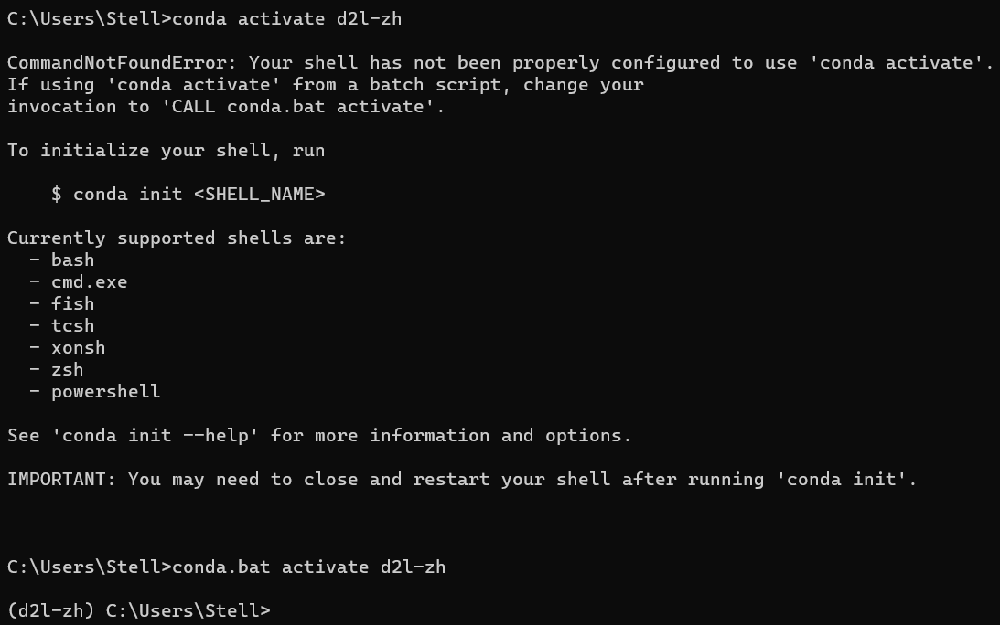
解决： 在cmd中使用 conda.bat activate envname
2、操作 1 2 3 4 5 6 7 8 9 10 11 12 13 14 15 16 17 18 19 20 21 22 23 24 25 26 27 28 29 30 31 32 33 34 35 36 37 38 39 40 41 42 43 44 45 46 47 48 49 50 51 52 53 54 55 56 57 58 59 60 61 62 63 64 65 66 67 68 69 70 sudo apt update sudo apt install build-essential sudo apt install python3.8 wget xxxxxxxxx[miniconda的下载地址] bash Miniconda3-Latest-Linux-x86_64.sh bash -----------------------------------------------------快照1 conda create --name python38 python=3.8 conda activate python36 conda deactivate -------------------------------------------------------- pip install jupyter d2l torch torchvision wget https://zh-v2.d2l.ai/d2l-zh.zip sudo apt install zip ls unzip d2l-zh.zip cd pytorch/ ls cd .. sudo apt install git git clone https://github.com/d2l-ai/d2l-zh-pytorch-slides jupyter notebook _________________对于远程服务器，需要将远端端口映射到本地8888端口 [本地] :ssh -L8888:localhsot:8888 ubuntu@[远程ip] -------------------------------------------------------- 【如https ://zh.d2l.ai/chapter_linear-networks/linear-regression.html】 pip install rise -------------------------------------------end conda env remove d2l-zh conda create -n -y d2l-zh python=3.8 pip conda create -n d2l-zh -y python=3.8 pip conda activate d2l-zh pip install -y jupyter d2l torch torchvision wget https://zh-v2.d2l.ai/d2l-zh.zip unzip d2l-zh.zip jupyter notebook
1.1 关于build-essential **build-essential **：编译程序必须的软件包
查看该软件包的依赖关系，可以看到以下内容：
1 2 3 4 5 6 7 8 9 10 $ apt-cache depends build-essential build-essential |Depends:libc6 -dev Depends: <libc-dev> libc6-dev Depends:gcc Depends:g ++ Depends:make make -guile Depends:dpkg -dev
安装了该软件包，编译c/c++所需要的软件包也都会被安装。因此如果想在Ubuntu中编译c/c++程序，只需要安装该软件包就可以了
1 2 3 $sudo apt-get install build-essential$sudo apt install build-essential
推荐：apt 取代apt-get 原因
apt 命令是对之前的apt-get | apt-cache 等的封装，提供更加统一，更加适合终端用户 使用的接口 apt 具有更精减 但足够的命令选项，而且参数选项的组织方式更为有效 apt是为交互使用而设计的。最好在shell脚本中使用apt-get和apt-cache，因为它们在不同版本之间向后兼容，并且有更多选项和功能。 对于基本命令，两个工具的语法是相同的
六、数据操作 1、课程内容 1.1 N维数组 N维数组是机器学习和神经网络的主要数据结构
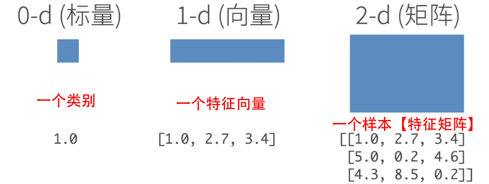
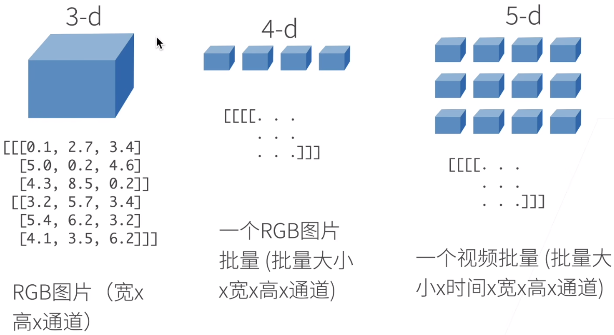
1.2 创建数组 三要素：
形状：如3×4矩阵 每个元素的数据类型：如32位浮点数 每个元素的值：如全零或随机数
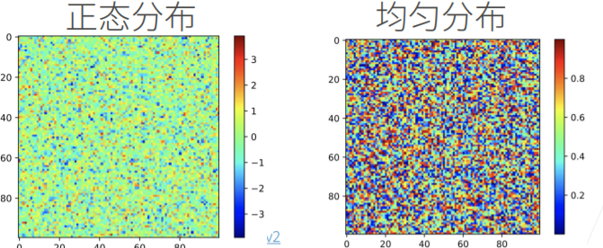
1.3 访问元素
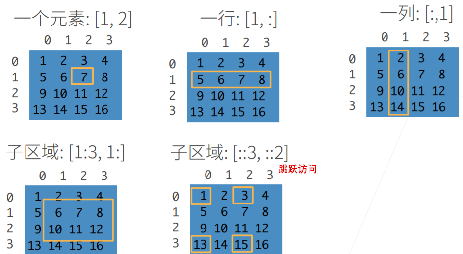
注意：X[0:2]：区间为左闭右开【0,2)
1.5 数据操作 Torch：【译：火把；手电筒】【PyTorch是一个开源的Python机器学习库，基于Torch，底层由C++实现，应用于人工智能领域，如自然语言处理。 它最初由Facebook的人工智能研究团队开发，并且被用于Uber的概率编程软件Pyro】虽然它被称为PyTorch，但我们应该导入 torch 而不是 pytorch。
数组与张量：
张量【英：tensor】：表示一个数值组成的数组，这个数组可能有很多维度【数学维度的定义】【tensorflow 和 pytorch重载了 张量的概念】 数组【ndarray | N-dimensional array】：属于【计算机语言维度的定义】 ▲ Torch中的张量，一定 是一个行向量 【1×N】；而列向量 是一个N×1的矩阵
生成一个tensor数组：0-11；展示属性，并改变形状
1 2 3 4 5 6 7 8 9 10 11 12 13 14 15 import torchIn: x = torch.arange(12 ) Out: tensor([ 0 , 1 , 2 , 3 , 4 , 5 , 6 , 7 , 8 , 9 , 10 , 11 ]) In: x.shape, x.numel() Out: torch.Size([12 ]), 12 In: X = x.reshape(3 , 4 ) X Out: tensor([[ 0 , 1 , 2 , 3 ], [ 4 , 5 , 6 , 7 ], [ 8 , 9 , 10 , 11 ]])
生成特殊tensor数组并赋值 ：其数组元素使用全0、全1、其他常量或者从特定分布中随机采样的数字
1 2 3 4 5 6 7 8 9 10 11 12 13 14 15 16 17 18 19 20 21 22 23 24 25 26 27 28 29 In: torch.zeros((2 , 3 , 4 )) torch.ones((2 , 3 , 4 )) torch.randn(3 , 4 ) Out: tensor([[[0. , 0. , 0. , 0. ], [0. , 0. , 0. , 0. ], [0. , 0. , 0. , 0. ]], [[0. , 0. , 0. , 0. ], [0. , 0. , 0. , 0. ], [0. , 0. , 0. , 0. ]]]) tensor([[[1. , 1. , 1. , 1. ], [1. , 1. , 1. , 1. ], [1. , 1. , 1. , 1. ]], [[1. , 1. , 1. , 1. ], [1. , 1. , 1. , 1. ], [1. , 1. , 1. , 1. ]]]) tensor([[ 0.2104 , 1.4439 , -1.3455 , -0.8273 ], [ 0.8009 , 0.3585 , -0.2690 , 1.6183 ], [-0.4611 , 1.5744 , -0.4882 , -0.5317 ]]) In: torch.tensor([[2 , 1 , 4 , 3 ], [1 , 2 , 3 , 4 ], [4 , 3 , 2 , 1 ]]) Out: tensor([[2 , 1 , 4 , 3 ], [1 , 2 , 3 , 4 ], [4 , 3 , 2 , 1 ]])
元素运算 ：常见的标准算术运算符（+、-、*、/ 和 **）都可以被升级为按元素运算
1 2 3 4 5 6 7 8 9 10 11 12 13 14 In: x = torch.tensor([1.0 , 2 , 4 , 8 ]) y = torch.tensor([2 , 2 , 2 , 2 ]) x + y, x - y, x * y, x / y, x**y Out: (tensor([ 3. , 4. , 6. , 10. ]), tensor([-1. , 0. , 2. , 6. ]), tensor([ 2. , 4. , 8. , 16. ]), tensor([0.5000 , 1.0000 , 2.0000 , 4.0000 ]), tensor([ 1. , 4. , 16. , 64. ])) In: torch.exp(x) Out: tensor([2.7183e+00 , 7.3891e+00 , 5.4598e+01 , 2.9810e+03 ])
多张量操作 ：连结【concatenate】
1 2 3 4 5 6 7 8 9 10 11 12 13 14 15 In: X = torch.arange(12 , dtype=torch.float32).reshape((3 , 4 )) Y = torch.tensor([[2.0 , 1 , 4 , 3 ], [1 , 2 , 3 , 4 ], [4 , 3 , 2 , 1 ]]) torch.cat((X, Y), dim=0 ) torch.cat((X, Y), dim=1 ) Out: (tensor([[ 0. , 1. , 2. , 3. ], [ 4. , 5. , 6. , 7. ], [ 8. , 9. , 10. , 11. ], [ 2. , 1. , 4. , 3. ], [ 1. , 2. , 3. , 4. ], [ 4. , 3. , 2. , 1. ]]), tensor([[ 0. , 1. , 2. , 3. , 2. , 1. , 4. , 3. ], [ 4. , 5. , 6. , 7. , 1. , 2. , 3. , 4. ], [ 8. , 9. , 10. , 11. , 4. , 3. , 2. , 1. ]]))
通过逻辑运算符构建二维张量
1 2 3 4 In: X == Y Out: tensor([[False , True , False , True ], [False , False , False , False ], [False , False , False , False ]])
对张量中所有元素求和，产生只有一个元素的张量 ：.sum()
1 2 In: X.sum() Out: tensor(66. )
【易错】广播机制 ：即使形状不同，仍然可以执行元素操作
1 2 3 4 5 6 7 8 9 10 11 12 In: a = torch.arange(3 ).reshape((3 , 1 )) b = torch.arange(2 ).reshape((1 , 2 )) a, b a + b Out: (tensor([[0 ], [1 ], [2 ]]), tensor([[0 , 1 ]])) tensor([[0 , 1 ], [1 , 2 ], [2 , 3 ]])
元素访问
1 2 3 4 5 In: X[-1 ], X[1 :3 ] Out: (tensor([ 8. , 9. , 10. , 11. ]), tensor([[ 4. , 5. , 6. , 7. ], [ 8. , 9. , 10. , 11. ]]))
赋值【写元素】
1 2 3 4 5 6 7 8 9 10 11 12 13 In: X[1 , 2 ] = 9 X Out: tensor([[ 0. , 1. , 2. , 3. ], [ 4. , 5. , 9. , 7. ], [ 8. , 9. , 10. , 11. ]]) In: X[0 :2 , :] = 12 X Out: tensor([[12. , 12. , 12. , 12. ], [12. , 12. , 12. , 12. ], [ 8. , 9. , 10. , 11. ]])
内存地址问题 【Python内核会自动释放不需要内存空间】
1 2 3 4 5 6 7 8 9 10 11 12 13 14 15 16 17 18 19 20 In: before = id(Y) Y = Y + X id(Y) == before Out: False In: Z = torch.zeros_like(Y) print('id(Z):' , id(Z)) Z[:] = X + Y print('id(Z):' , id(Z)) Out: id(Z): 140452400950336 id(Z): 140452400950336 In: before = id(X) X += Y id(X) == before Out: True
torch -> Numpy张量 【Python中最常见最基础】
1 2 3 4 5 6 7 8 9 In: A = X.numpy() B = torch.tensor(A) type(A), type(B) Out: (numpy.ndarray, torch.Tensor) In: a = torch.tensor([3.5 ]) a, a.item(), float(a), int(a) Out: (tensor([3.5000 ]), 3.5 , 3.5 , 3 )
2、关于Torch 【详见 Tool-Pytorch】
参考文档 | 以下为已用的函数
3、关于Numpy 【详见 Tool-Numpy】
4、关于pandas 5、关于作图 1 2 3 d2l .set_figsize () d2l .plt .scatter (features [:, 1] .detach ().numpy (), labels .detach ().numpy (), 1);
七、数据预处理 逗号分隔值 （Comma-Separated Values，CSV ，有时也称为字符分隔值 ，因为分隔字符也可以不是逗号），其文件以纯文本形式存储表格数据（数字和文本）。纯文本意味着该文件是一个字符序列，不含必须像二进制数字那样被解读的数据。
CSV文件由任意数目的记录组成，记录间以某种换行符分隔； 每条记录由字段组成，字段间的分隔符是其它字符或字符串，最常见的是逗号或制表符 ； 通常，所有记录都有完全相同的字段序列。通常都是纯文本文件 。建议使用WORDPAD或是记事本来开启，再则先另存新档后用EXCEL开启，也是方法之一。 创建一个人工数据集，并存储在csv（逗号分隔值）文件
1 2 3 4 5 6 7 8 9 10 import osos.makedirs(os.path.join('..' , 'data' ), exist_ok=True ) data_file = os.path.join('..' , 'data' , 'house_tiny.csv' ) with open(data_file, 'w' ) as f: f.write('NumRooms,Alley,Price\n' ) f.write('NA,Pave,127500\n' ) f.write('2,NA,106000\n' ) f.write('4,NA,178100\n' ) f.write('NA,NA,140000\n' )
从创建的csv文件中加载原始数据集
1 2 3 4 5 6 7 8 9 10 11 12 In: import pandas as pd data = pd.read_csv(data_file) print(data) Out: NumRooms Alley Price 0 NaN Pave 127500 1 2.0 NaN 106000 2 4.0 NaN 178100 3 NaN NaN 140000
为了处理缺失的数据，典型的方法包括插值和删除， 这里，我们将考虑插值
1 2 3 4 5 6 7 8 9 10 11 In: inputs, outputs = data.iloc[:, 0 :2 ], data.iloc[:, 2 ] inputs = inputs.fillna(inputs.mean()) print(inputs) Out: NumRooms Alley 0 3.0 Pave 1 2.0 NaN 2 4.0 NaN 3 3.0 NaN
对于inputs中的类别值或离散值，我们将“NaN”视为一个类别
1 2 3 4 5 6 7 8 9 In: inputs = pd.get_dummies(inputs, dummy_na=True ) print(inputs) Out: NumRooms Alley_Pave Alley_nan 0 3.0 1 0 1 2.0 0 1 2 4.0 0 1 3 3.0 0 1
上面的操作，会导致矩阵稀疏化【稀疏矩阵对机器学习影响不大】
现在inputs和outputs中的所有条目都是数值类型，它们可以转换为张量格式
1 2 3 4 5 6 7 8 9 10 In: import torch X, y = torch.tensor(inputs.values), torch.tensor(outputs.values) X, y Out: (tensor([[3. , 1. , 0. ], [2. , 0. , 1. ], [4. , 0. , 1. ], [3. , 0. , 1. ]], dtype=torch.float64), tensor([127500 , 106000 , 178100 , 140000 ]))
python默认为浮点64位，但会导致计算慢，故对于深度学习来说一般使用float32
八、预备知识 1、线性代数 1.1 相关内容回顾
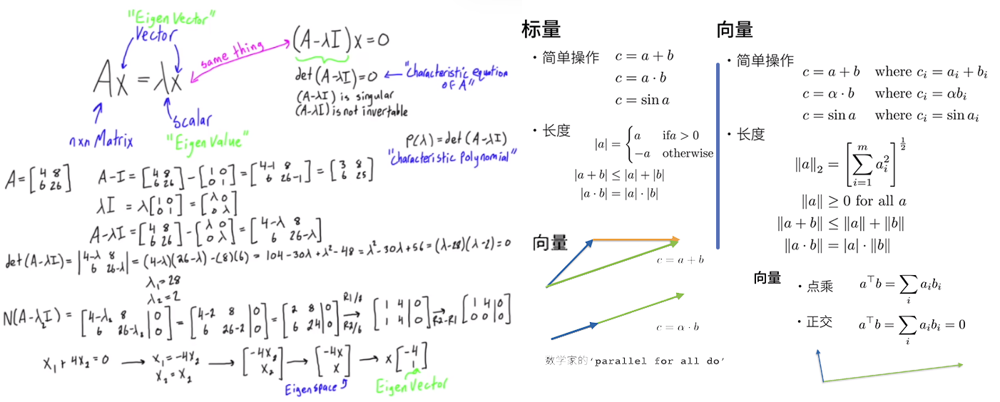
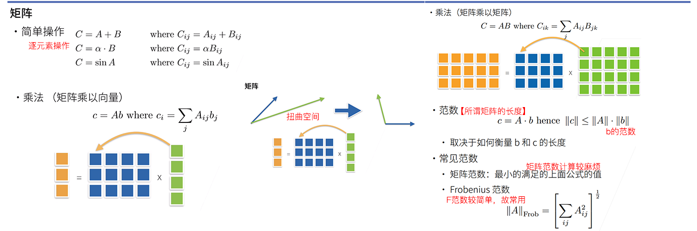
关于矩阵范数，可参考原文
在很多实际问题种，常需要对同一线性空间种的向量引入作为它们”大小“的一种度量，进而比较两个向量之间的”接近程度“。引入的这种体现其”大小“的量，就是范数 。
常见有：1-范数、2-范数、∞-范数、p-范数、F范数
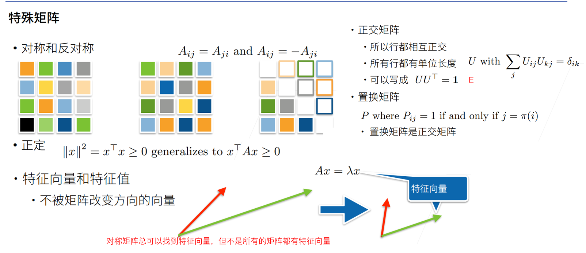
1.2 线性代数实现 1 2 3 4 5 6 7 8 In: import torch x = torch.tensor([3.0 ]) y = torch.tensor([2.0 ]) x + y, x * y, x / y, x**y Out: (tensor([5. ]), tensor([6. ]), tensor([1.5000 ]), tensor([9. ]))
1 2 3 4 5 6 7 8 9 10 11 12 13 14 15 16 17 18 19 20 21 22 23 24 25 In: x = torch.arange(4 ) x Out: tensor([0 , 1 , 2 , 3 ]) In: x[3 ] Out: tensor(3 ) In: x[3 ] Out: tensor(3 ) In: len(x) Out:4 In: x.shape Out: torch.Size([4 ])
1 2 3 4 5 6 7 8 9 10 11 12 13 14 15 16 17 18 19 20 21 22 23 24 25 26 27 28 29 30 31 32 33 34 35 36 37 38 39 40 41 42 In: A = torch.arange(20 ).reshape(5 , 4 ) A Out: tensor([[ 0 , 1 , 2 , 3 ], [ 4 , 5 , 6 , 7 ], [ 8 , 9 , 10 , 11 ], [12 , 13 , 14 , 15 ], [16 , 17 , 18 , 19 ]]) In: A.T, A.T.shape Out: (tensor([[ 0 , 4 , 8 , 12 , 16 ], [ 1 , 5 , 9 , 13 , 17 ], [ 2 , 6 , 10 , 14 , 18 ], [ 3 , 7 , 11 , 15 , 19 ]]), torch.Size([4 , 5 ])) In: B = torch.tensor([[1 , 2 , 3 ], [2 , 0 , 4 ], [3 , 4 , 5 ]]) B Out: tensor([[1 , 2 , 3 ], [2 , 0 , 4 ], [3 , 4 , 5 ]]) In: B == B.T Out: tensor([[True , True , True ], [True , True , True ], [True , True , True ]]) In: X = torch.arange(24 ).reshape(2 , 3 , 4 ) X Out: tensor([[[ 0 , 1 , 2 , 3 ], [ 4 , 5 , 6 , 7 ], [ 8 , 9 , 10 , 11 ]], [[12 , 13 , 14 , 15 ], [16 , 17 , 18 , 19 ], [20 , 21 , 22 , 23 ]]])
1 2 3 4 5 6 7 8 9 10 11 12 13 14 15 16 17 18 19 20 21 22 23 24 25 26 27 28 29 30 31 32 33 34 35 In: A = torch.arange(20 , dtype=torch.float32).reshape(5 , 4 ) B = A.clone() A, A + B Out: (tensor([[ 0. , 1. , 2. , 3. ], [ 4. , 5. , 6. , 7. ], [ 8. , 9. , 10. , 11. ], [12. , 13. , 14. , 15. ], [16. , 17. , 18. , 19. ]]), tensor([[ 0. , 2. , 4. , 6. ], [ 8. , 10. , 12. , 14. ], [16. , 18. , 20. , 22. ], [24. , 26. , 28. , 30. ], [32. , 34. , 36. , 38. ]])) In: A * B Out: tensor([[ 0. , 1. , 4. , 9. ], [ 16. , 25. , 36. , 49. ], [ 64. , 81. , 100. , 121. ], [144. , 169. , 196. , 225. ], [256. , 289. , 324. , 361. ]]) In: a = 2 X = torch.arange(24 ).reshape(2 , 3 , 4 ) a + X, (a * X).shape Out: (tensor([[[ 2 , 3 , 4 , 5 ], [ 6 , 7 , 8 , 9 ], [10 , 11 , 12 , 13 ]], [[14 , 15 , 16 , 17 ], [18 , 19 , 20 , 21 ], [22 , 23 , 24 , 25 ]]]), torch.Size([2 , 3 , 4 ]))
1 2 3 4 5 6 7 8 9 10 11 12 13 14 15 16 17 18 19 20 21 22 23 24 25 26 27 28 29 30 31 32 In: x = torch.arange(4 , dtype=torch.float32) x, x.sum() Out: (tensor([0. , 1. , 2. , 3. ]), tensor(6. )) In: A.shape, A.sum() Out: (torch.Size([5 , 4 ]), tensor(190. )) In: A.sum(axis=[0 , 1 ]) Out: tensor(190. ) In: A_sum_axis0 = A.sum(axis=0 ) A_sum_axis0, A_sum_axis0.shape Out: (tensor([40. , 45. , 50. , 55. ]), torch.Size([4 ])) In: A_sum_axis1 = A.sum(axis=1 ) A_sum_axis1, A_sum_axis1.shape Out: (tensor([ 6. , 22. , 38. , 54. , 70. ]), torch.Size([5 ])) In: A.cumsum(axis=0 ) Out: tensor([[ 0. , 1. , 2. , 3. ], [ 4. , 6. , 8. , 10. ], [12. , 15. , 18. , 21. ], [24. , 28. , 32. , 36. ], [40. , 45. , 50. , 55. ]])
1 2 3 4 5 6 7 8 9 10 11 12 13 14 15 16 17 18 19 20 21 22 23 24 25 26 In: A.mean(), A.sum() / A.numel() Out: (tensor(9.5000 ), tensor(9.5000 )) In: A.mean(axis=0 ), A.sum(axis=0 ) / A.shape[0 ] Out: (tensor([ 8. , 9. , 10. , 11. ]), tensor([ 8. , 9. , 10. , 11. ])) In: sum_A = A.sum(axis=1 , keepdims=True ) sum_A Out: tensor([[ 6. ], [22. ], [38. ], [54. ], [70. ]]) In: A / sum_A Out: tensor([[0.0000 , 0.1667 , 0.3333 , 0.5000 ], [0.1818 , 0.2273 , 0.2727 , 0.3182 ], [0.2105 , 0.2368 , 0.2632 , 0.2895 ], [0.2222 , 0.2407 , 0.2593 , 0.2778 ], [0.2286 , 0.2429 , 0.2571 , 0.2714 ]])
当 keepdim = true，被求和的维度不会被丢失，而是置为1
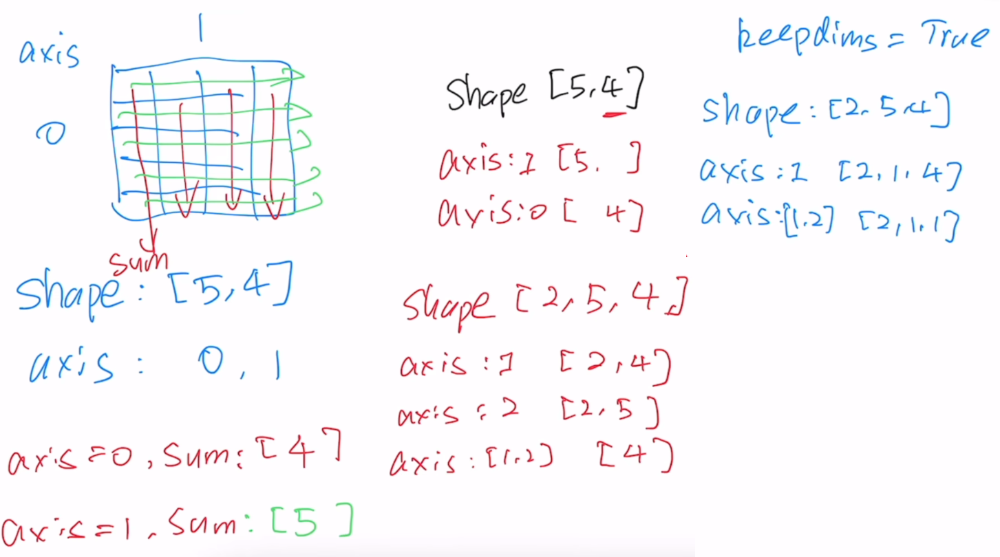
1 2 3 4 5 6 7 8 In: y = torch.ones(4 , dtype=torch.float32) x, y, torch.dot(x, y) Out: (tensor([0. , 1. , 2. , 3. ]), tensor([1. , 1. , 1. , 1. ]), tensor(6. )) In: torch.sum(x * y) Out: tensor(6. )
【torch.mv | Matrix-Vector-Multiplication】
1 2 3 4 In: A.shape, x.shape, torch.mv(A, x) Out: (torch.Size([5 , 4 ]), torch.Size([4 ]), tensor([ 14. , 38. , 62. , 86. , 110. ]))
torch.mv(X, w0)：是矩阵和向量相乘。第一个参数是矩阵，第二个参数只能是一维向量，等价于X乘以w0的转置【w0为横向的，长度为m的向量】
【torch.mm | Matrix-Multiplication】
1 2 3 4 5 6 7 8 In: B = torch.ones(4 , 3 ) torch.mm(A, B) Out: tensor([[ 6. , 6. , 6. ], [22. , 22. , 22. ], [38. , 38. , 38. ], [54. , 54. , 54. ], [70. , 70. , 70. ]])
1 2 3 4 5 6 7 8 9 10 11 12 13 14 15 In: u = torch.tensor([3.0 , -4.0 ]) torch.norm(u) Out: tensor(5. ) In: torch.abs(u).sum() Out: tensor(7. ) In: torch.norm(torch.ones((4 , 9 ))) Out: tensor(6. )
2、矩阵计算
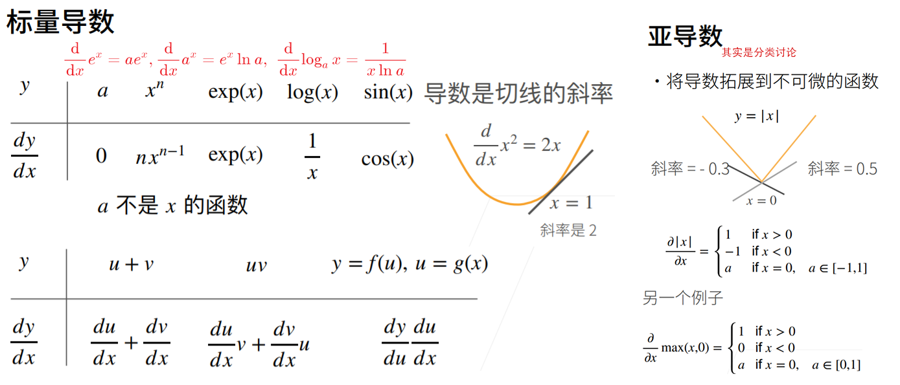
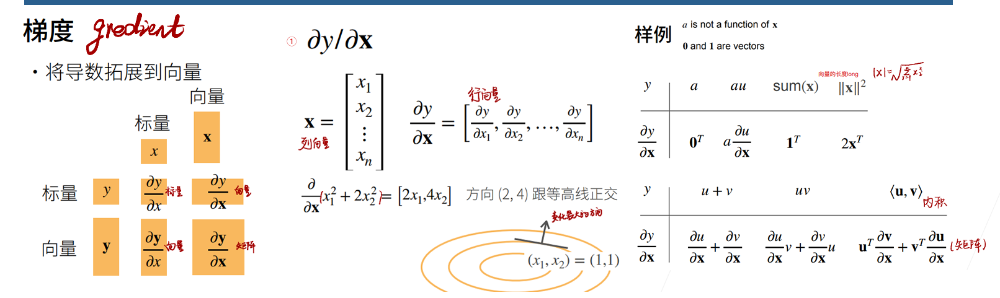
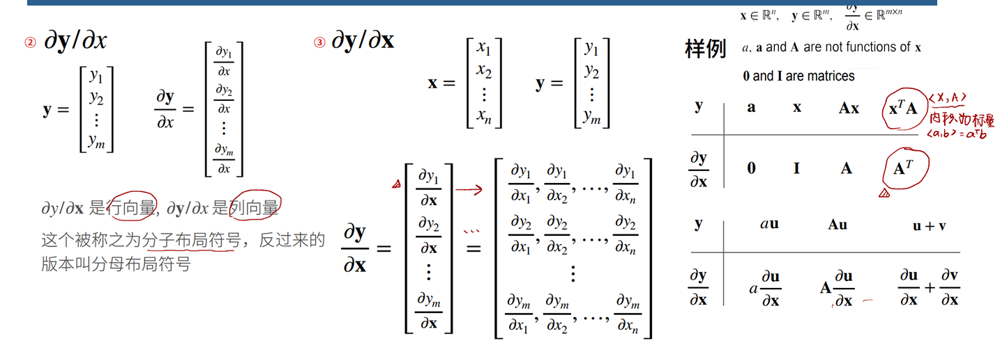
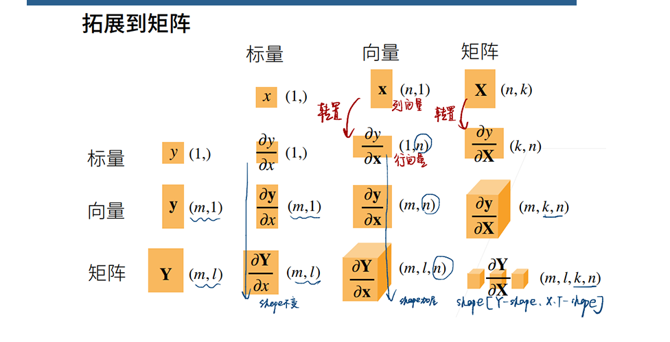
3、自动求导 3.1 基本方法
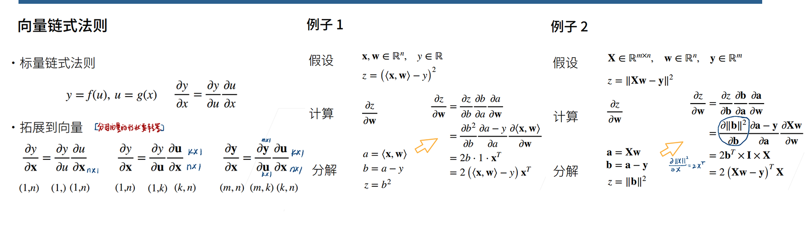
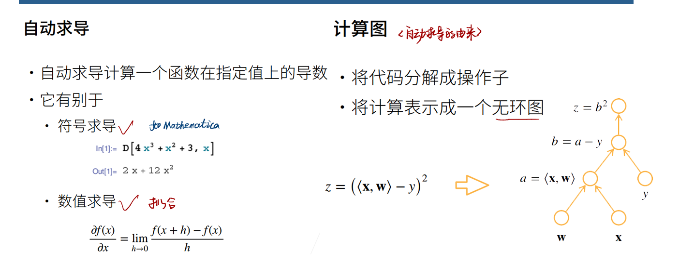
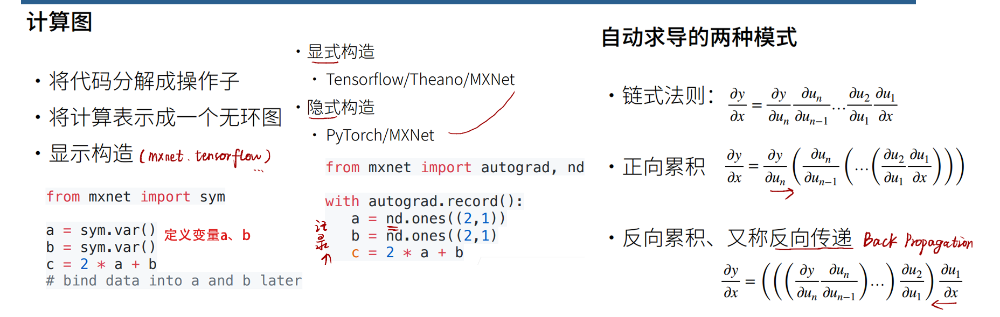
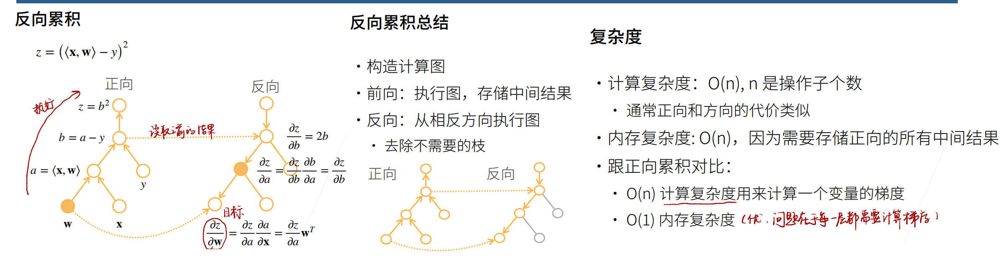
pytorch自动求导机制文档
从后向中排除子图 ：每个变量都有两个标志：requires_grad和volatile。它们都允许从梯度计算中精细地排除子图，并可以提高效率。
1、requires_grad
如果有一个单一的输入操作需要梯度，它的输出也需要梯度。相反，只有所有输入都不需要梯度，输出才不需要。如果其中所有的变量都不需要梯度进行，后向计算不会在子图中执行。
1 2 3 4 5 6 7 8 9 >>> x = Variable(torch.randn(5 , 5 ))>>> y = Variable(torch.randn(5 , 5 ))>>> z = Variable(torch.randn(5 , 5 ), requires_grad=True )>>> a = x + y>>> a.requires_gradFalse >>> b = a + z>>> b.requires_gradTrue
这个标志特别有用，当您想要冻结部分模型时，或者您事先知道不会使用某些参数的梯度。例如，如果要对预先训练的CNN进行优化，只要切换冻结模型中的requires_grad标志就足够了，直到计算到最后一层才会保存中间缓冲区，其中的仿射变换将使用需要梯度的权重并且网络的输出也将需要它们。
2、volatile
纯粹的inference模式下推荐使用volatile，当你确定你甚至不会调用.backward()时。它比任何其他自动求导的设置更有效——它将使用绝对最小的内存来评估模型。volatile也决定了require_grad is False。
volatile不同于require_grad的传递。如果一个操作甚至只有有一个volatile的输入，它的输出也将是volatile。Volatility比“不需要梯度”更容易传递——只需要一个volatile的输入即可得到一个volatile的输出，相对的，需要所有的输入“不需要梯度”才能得到不需要梯度的输出。使用volatile标志，您不需要更改模型参数的任何设置来用于inference。创建一个volatile的输入就够了，这将保证不会保存中间状态。
3.2 自动求导实现 例子一
假设我们想对函数 y = 2 x T x x 求导【此时的x为张量，必然是一个行向量】
1 2 3 4 5 In: import torch x = torch.arange(4.0 ) x Out: tensor([0. , 1. , 2. , 3. ])
在我们计算y关于x的梯度之前，我们需要一个地方来存储梯度
1 2 3 4 5 6 7 In: x.requires_grad_(True ) x.grad In: y = 2 * torch.dot(x, x) y Out: tensor(28. , grad_fn=<MulBackward0>)
通过调用反向传播函数 来自动计算y关于x每个分量的梯度
1 2 3 4 5 6 7 In: y.backward() x.grad Out: tensor([ 0. , 4. , 8. , 12. ]) In: x.grad == 4 * x Out: tensor([True , True , True , True ])
由矩阵计算的理论，x 与 A 的点积 <x, A> = < x , A >= x T A ，对其关于 x 求导后为 A T y =< x , x >= x T x ，对其关于 x 求导后为 x T
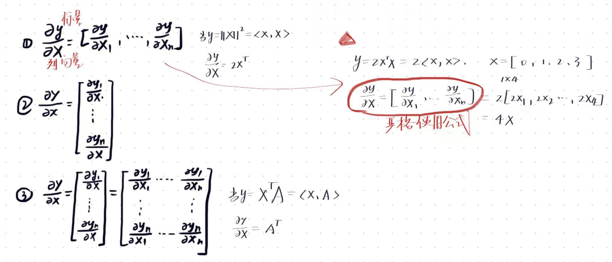
例子二
现在让我们计算x的另一个函数【默认情况下，pytorch会累积梯度 ，我们需要清除之前的值 】
1 2 3 4 5 6 In: x.grad.zero_() y = x.sum() y.backward() x.grad Out: tensor([1. , 1. , 1. , 1. ])
例子三
深度学习中 ，我们的目的不是计算微分矩阵，而是在批量中每个样本单独计算的偏导数之和【即很少计算向量关于向量的导数 ，而是先做和在求导，即一般都是计算标量关于向量的导数 】
1 2 3 4 5 6 7 8 9 10 In: x.grad.zero_() y = x * x y.sum().backward() x.grad Out: tensor([0. , 2. , 4. , 6. ])
例子四
将某些计算移动到记录的计算图之外【Tensor.detach()】
1 2 3 4 5 6 7 8 9 10 11 12 13 14 15 In: x.grad.zero_() y = x * x u = y.detach() z = u * x z.sum().backward() x.grad == u Out: tensor([True , True , True , True ]) In: x.grad.zero_() y.sum().backward() x.grad == 2 * x Out: tensor([True , True , True , True ])
u = y.detach()：将y当作常数，而不是关于x的函数；故u为一个常数，值为x*x
此方法多用于在固定参数
例子五
即使构建函数的计算图需要通过Python控制流（例如，条件、循环或任意函数调用），我们仍然可以计算得到的变量的梯度【在此例中，torch会把计算过程存下来】【Pytorch的优势所在，但会导致计算速度降低】
1 2 3 4 5 6 7 8 9 10 11 12 13 14 15 16 17 18 In: def f (a ): b = a * 2 while b.norm() < 1000 : b = b * 2 if b.sum() > 0 : c = b else : c = 100 * b return c a = torch.randn(size=(), requires_grad=True ) d = f(a) d.backward() a.grad == d / a Out: tensor(True )
Pytorch.norm()：【L2范数】||x||2 = 对向量每个元素的平方求和，再开根号
参考文档
3.3 理解前向计算与反向计算 九、线性回归 线性回归，是最基础的一个模型，也是理解所有机器学习模型的基础。
1、理解线性回归
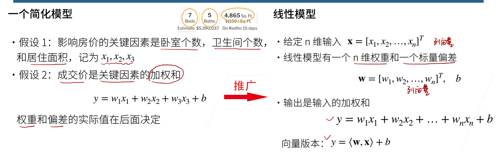
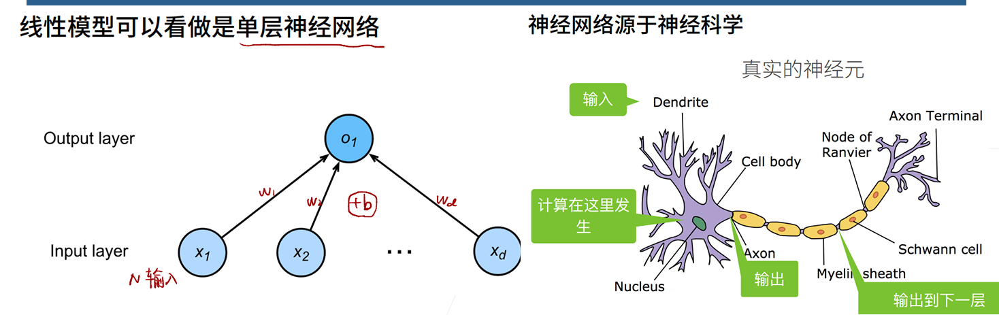
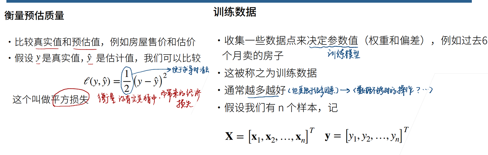
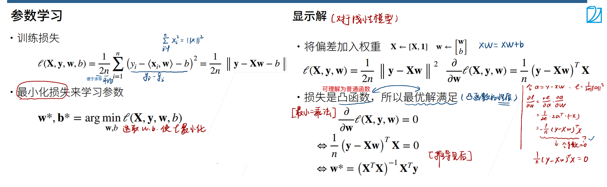
最优解的推导过程：
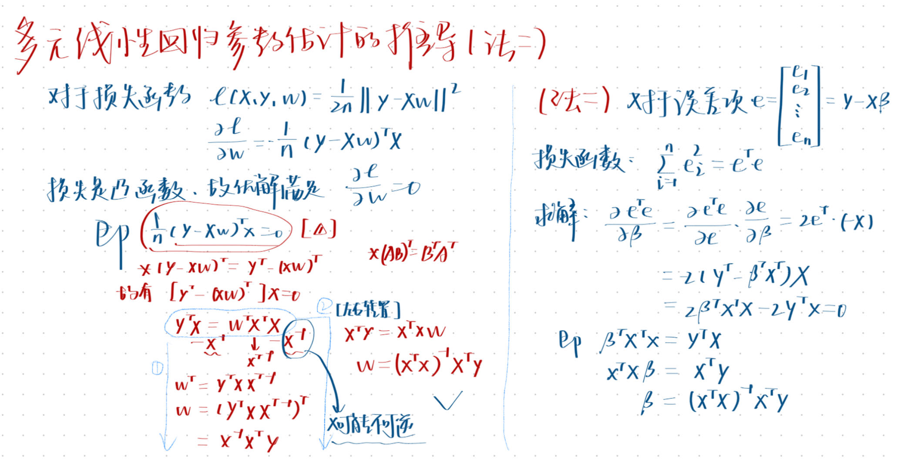
总结 线性回归是对n维输入的加权 ，外加偏差 使用平方损失 来衡量预测值 和真实值 的差异 线性回归有显示解 【仅有凸函数可求最优解】 线性回归可以看做是单层神经网络 2、基础优化算法 gd【gradient descent】：梯度下降
sgd【Stochastic gradient descent】：随机梯度下降【随机，是随机采样 的意思】
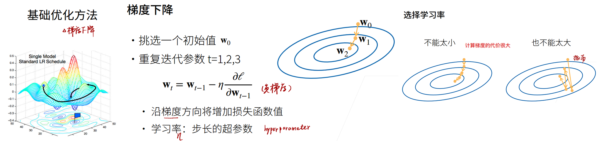
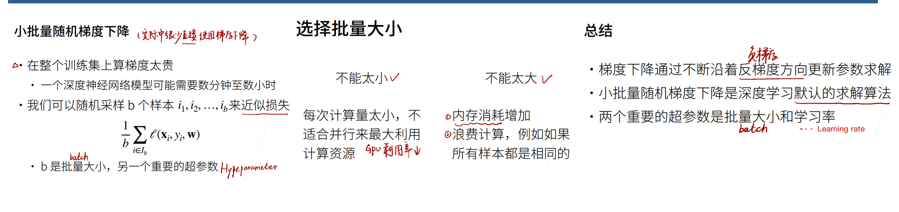
3、线性回归的从零实现 从零开始实现整个方法，包括数据流水线、模型、损失函数和小批量随机梯度下降优化器
1 2 3 4 %matplotlib inline import randomimport torchfrom d2l import torch as d2l
random包用于随机生成
根据带有噪声的线性模型构造一个人造数据集。 我们使用线性模型参数w = [ 2 , − 3.4 ] T 、 b = 4.2 和噪声项 ϵ y = X w + b + ϵ
【随机数X，经一系列固定操作，再加上一个随机噪声ϵ】
1 2 3 4 5 6 7 8 9 10 def synthetic_data (w, b, num_examples ): """生成 y = Xw + b + 噪声。""" X = torch.normal(0 , 1 , (num_examples, len(w))) y = torch.matmul(X, w) + b y += torch.normal(0 , 0.01 , y.shape) return X, y.reshape((-1 , 1 )) true_w = torch.tensor([2 , -3.4 ]) true_b = 4.2 features, labels = synthetic_data(true_w, true_b, 1000 )
上例中，torch.normal(均值，标准差，（样本数量 ，样本的长度为w的长度）)
1 2 3 4 5 6 7 8 9 10 In: w = torch.tensor([2 , -3.4 ]) b = 4.2 X = torch.normal(0 , 1 , (4 , 2 )) y = torch.matmul(X, w) + b X,y Out: (tensor([[-0.2436 , -0.2702 ], [ 1.4505 , 0.3857 ], [ 0.4671 , 0.8806 ], [ 0.4620 , -0.2006 ]]), tensor([4.6315 , 5.7897 , 2.1403 , 5.8060 ]))
X的两个维度 ，可以理解为每个样本都均有两个特征，每个特征对应w的两个维度的权重
y += torch.normal(0, 0.01, y.shape)：在y上加入随机噪音【均值为0，标准差为0.01，形状与y相同】
函数的返回值：将y转为列向量返回
features 中的每一行都包含一个二维数据样本，labels 中的每一行都包含一维标签值（一个标量）
1 2 3 4 5 6 7 8 9 10 In: print('features:' , features[0 ], '\nlabel:' , labels[0 ]) Out: features: tensor([-0.6612 , -1.8215 ]) label: tensor([9.0842 ]) In: d2l.set_figsize() d2l.plt.scatter(features[:, 1 ].detach().numpy(), labels.detach().numpy(), 1 );
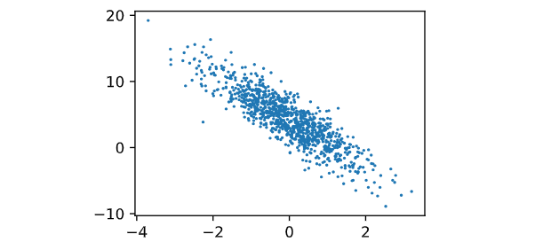
定义一个data_iter 函数， 该函数接收批量大小、特征矩阵和标签向量作为输入，生成大小为batch_size的小批量
1 2 3 4 5 6 7 8 9 10 11 12 13 14 15 16 17 18 19 20 21 22 23 24 25 26 27 28 29 30 31 32 33 34 35 36 def data_iter (batch_size, features, labels ): num_examples = len(features) indices = list(range(num_examples)) random.shuffle(indices) for i in range(0 , num_examples, batch_size): batch_indices = torch.tensor(indices[i:min(i + batch_size, num_examples)]) yield features[batch_indices], labels[batch_indices] batch_size = 10 for X, y in data_iter(batch_size, features, labels): print(X, '\n' , y) break Out: tensor([[ 0.4113 , -0.1393 ], [-1.6666 , -0.4404 ], [ 0.4753 , 0.4441 ], [ 0.4856 , -0.4297 ], [ 0.0251 , 3.2046 ], [-0.1691 , 0.2191 ], [ 0.1018 , -1.0219 ], [ 0.6477 , -0.3860 ], [ 0.6138 , 1.7933 ], [-0.2465 , -0.4396 ]]) tensor([[ 5.5047 ], [ 2.3659 ], [ 3.6375 ], [ 6.6427 ], [-6.6450 ], [ 3.0990 ], [ 7.8872 ], [ 6.8009 ], [-0.6662 ], [ 5.2153 ]])
batch_indices中，indices有指数、目录的意思，而batch_indices的意思就是一个批量的索引编号
torch.tensor(list)【用Python–list构造张量】
yield语句可以理解为：先return这个循环内部batch_indices所指的样本特征features和标签labels，然后返回一个自动迭代器，再返回下一个batch_indices所指数据【具体理解见python】
数据已就绪，此时定义 初始化模型参数
1 2 3 w = torch.normal(0 , 0.01 , size=(2 , 1 ), requires_grad=True ) b = torch.zeros(1 , requires_grad=True )
定义模型
1 2 3 def linreg (X, w, b ): """线性回归模型。""" return torch.matmul(X, w) + b
定义损失函数
1 2 3 def squared_loss (y_hat, y ): """均方损失。""" return (y_hat - y.reshape(y_hat.shape))**2 / 2
定义优化算法
1 2 3 4 5 6 def sgd (params, lr, batch_size ): """小批量随机梯度下降。""" with torch.no_grad(): for param in params: param -= lr * param.grad / batch_size param.grad.zero_()
训练过程
1 2 3 4 5 6 7 8 9 10 11 12 13 14 15 16 17 18 19 20 21 lr = 0.03 num_epochs = 3 net = linreg loss = squared_loss for epoch in range(num_epochs): for X, y in data_iter(batch_size, features, labels): l = loss(net(X, w, b), y) l.sum().backward() sgd([w, b], lr, batch_size) with torch.no_grad(): train_l = loss(net(features, w, b), labels) print(f'epoch {epoch + 1 } , loss {float(train_l.mean()):f} ' ) Out: epoch 1 , loss 0.033913 epoch 2 , loss 0.000125 epoch 3 , loss 0.000050
比较真实参数和通过训练学到的参数来评估训练的成功程度【因为是人工数据集，因此我们知道真实的w&b】
1 2 3 4 5 In: print(f'w的估计误差: {true_w - w.reshape(true_w.shape)} ' ) print(f'b的估计误差: {true_b - b} ' ) Out: w的估计误差: tensor([-3.0041e-05 , 2.2221e-04 ], grad_fn=<SubBackward0>) b的估计误差: tensor([-0.0004 ], grad_fn=<RsubBackward1>)
学习率较大时，可能会出现求导除零、超出浮点数范围NAN的问题
3.4 从零实现Q&A detach()：将梯度从计算图中拿出来，不计算梯度data_iter函数中的写法中，是将所有数据load，如果数据过大，内存会爆的解决办法？【就算有100万条图片数据，我只要每次读入一个batch就行了。如果读入开销大，可以进行预读入】Indices必须转为Tensor才能去取到样本数据吗？【待测试 】每次随机拿一个batch，怎么保证所有的数据都读过了？【本例中的做法是拿到全部样本的索引，然后shuffle，之后顺序取索引号】 如果样本不是批量的整数倍，如果处理多余的样本？【三种做法。最常见的做法是，照样拿，正如本例中，反之求的是样本损失的平均值（本例中偷懒了）；第二种是直接丢掉；第三种是在原有样本中再随机挑选样本再补齐】 训练的epoch需要判断收敛吗？怎么做？【即判断epoch已经收敛时，自动化停止训练。最直接的，相邻两次epoch差别不大的时候，就可以认为收敛了，如相差小于1%时认为已收敛；第二种是使用验证数据集，判断模型精度不再增加时，停止训练；实际情况中，也可凭经验设置】 4、线性回归简洁实现
1 2 3 4 5 6 7 8 9 10 import numpy as npimport torchfrom torch.utils import data from d2l import torch as d2ltrue_w = torch.tensor([2 , -3.4 ]) true_b = 4.2 features, labels = d2l.synthetic_data(true_w, true_b, 1000 )
1 2 3 4 5 6 7 8 9 10 11 12 13 14 15 16 17 18 19 20 21 22 23 24 25 26 27 28 29 30 31 32 def load_array (data_arrays, batch_size, is_train=True ): """构造一个PyTorch数据迭代器。""" dataset = data.TensorDataset(*data_arrays) return data.DataLoader(dataset, batch_size, shuffle=is_train) batch_size = 10 data_iter = load_array((features, labels), batch_size) next(iter(data_iter)) Out: [tensor([[ 0.5650 , 1.3529 ], [-0.1374 , 0.1456 ], [-0.4337 , 0.6755 ], [-1.2355 , 0.1951 ], [-0.3829 , 1.3490 ], [ 0.9553 , -0.6591 ], [-1.2348 , 3.1388 ], [-1.2602 , -1.9106 ], [-0.4024 , 0.9888 ], [ 1.9672 , 0.9410 ]]), tensor([[ 0.7252 ], [ 3.4301 ], [ 1.0369 ], [ 1.0758 ], [-1.1405 ], [ 8.3455 ], [-8.9359 ], [ 8.1831 ], [ 0.0135 ], [ 4.9325 ]])]
将features和labels转为list传入TensorDateset，会得到一个pytorch的DataSet 将pytorch的DataSet传入DataLoader，返回一个迭代器【该迭代器每次从DataSet中随机取batch_size大小的小批量，shuffle参数标志是否打乱】 调用load_array返回一个迭代器，交由next函数执行一次【即只展示第一组样本数据】
1 2 3 4 5 6 from torch import nn net = nn.Sequential(nn.Linear(2 , 1 ))
1 2 3 4 5 6 7 8 net[0 ].weight.data.normal_(0 , 0.01 ) net[0 ].bias.data.fill_(0 )
MSELoss类，也称为平方 L2 范数
SGD 实例
1 2 trainer = torch.optim.SGD(net.parameters(), lr=0.03 )
1 2 3 4 5 6 7 8 9 10 11 12 13 14 num_epochs = 3 for epoch in range(num_epochs): for X, y in data_iter: l = loss(net(X), y) trainer.zero_grad() l.backward() trainer.step() l = loss(net(features), labels) print(f'epoch {epoch + 1 } , loss {l:f} ' ) Out: epoch 1 , loss 0.000269 epoch 2 , loss 0.000093 epoch 3 , loss 0.000093
5、线性回归QA Google colab
平方损失与绝对插值【最大区别是：后者是不可导函数】【实际上应用中差别不大】
损失为什么求平均？【可以不求平均，二者在数值上是等价的。对于w t = w t − 1 − η ∂ ℓ ∂ w t − 1
如何快速寻找合适的学习率？【优化算法章节】
batchsize是否会影响模型效果？【小是好的，大了不行。越小，对于收敛越好，本质是采样样本越少，样本噪音越多，即就是离真实情况差很多，这种情况下模型的泛化能力比较强】
学习率和批次，对收敛结果的影响不是很大，除非超参数很离谱
为什么机器学习优化算法采用梯度下降，即一阶导算法，而不是采用牛顿法，即二阶导算法？【二阶导很难求，很贵，只能近似。另外，机器学习的真实案例，很少能求最优解！】
使用SGD，是因为大部分Loss太复杂，无显示解，即无法推导出导数为0的解，只能用batch去逼近
简洁实现中，for循环中最后一个l = loss(net(features), labels)仅仅是为了print。没有进行清零，是因为只计算了loss，输入forward前向计算，没有backward反向计算，无需清零【pytorch的梯度不自动清零，不清零时，梯度会在原梯度上直接累加】
十、Softmax回归 1、引入Softmax
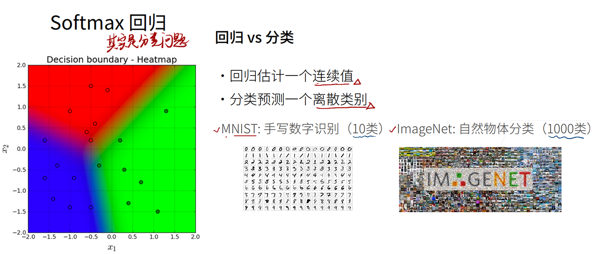
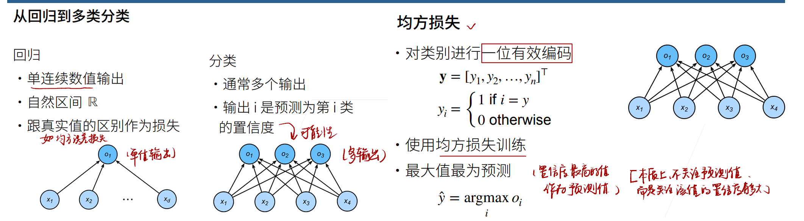
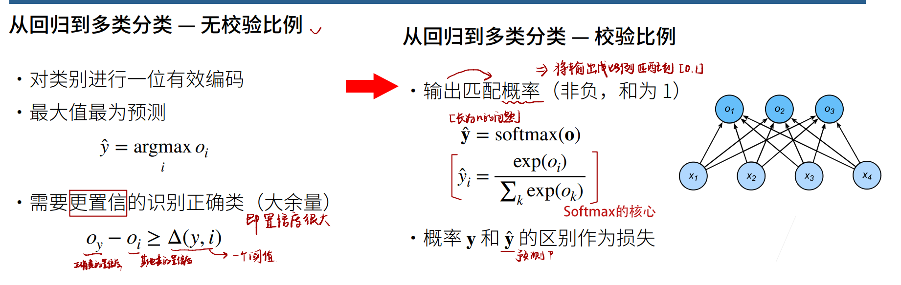
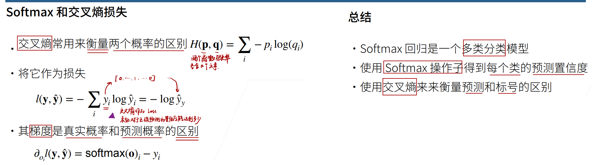
1.1 Softmax简易求导 Softmax【柔性最大值函数】推导过程
参考：
当我们对分类的Loss进行改进的时候，我们要通过梯度下降，每次优化一个step大小的梯度，这个时候我们就要求Loss对每个权重矩阵的偏导，然后应用链式法则 。
下面我们举出一个简单例子，原理一样
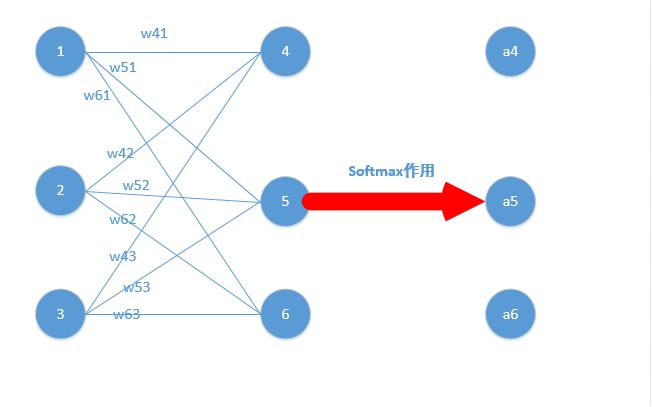
我们能得到下面公式：
1 2 3 z4 = w41 *o1 +w42 *o2 +w43 *o3 z5 = w51 *o1 +w52 *o2 +w53 *o3 z6 = w61 *o1 +w62 *o2 +w63 *o3
z4,z5,z6分别代表结点4,5,6的输出，01,02,03代表是结点1,2,3往后传的输入
那么我们可以经过softmax函数得到
a 4 = e x p ( z 4 ) e x p ( z 4 ) + e x p ( z 5 ) + e x p ( z 6 ) , a 5 = e x p ( z 5 ) e x p ( z 4 ) + e x p ( z 5 ) + e x p ( z 6 ) , a 6 = e x p ( z 6 ) e x p ( z 4 ) + e x p ( z 5 ) + e x p ( z 6 )
OK，我们的重头戏来了，怎么根据求梯度，然后利用梯度下降方法更新梯度！
要使用梯度下降，肯定需要一个损失函数，这里我们使用交叉熵作为我们的损失函数。 交叉熵函数形式如下：
L o s s = − ∑ i y i ln a i
其中y代表我们的真实值，a代表我们softmax求出的值，即预测值。i代表的是输出结点的标号！在上面例子，i就可以取值为4,5,6三个结点。
虽然，看起来感觉复杂了，还有累和，然后还要求导，每一个a都是softmax之后的形式！
但是实际上不是这样的，我们往往在真实中，如果只预测一个结果，那么在目标中只有一个结点的值为1，比如我认为在该状态下，我想要输出的是第四个动作（第四个结点）,那么训练数据的输出就是a4 = 1，a5=0，a6=0。在这种情况下，除了一个为1，其它都是0，那么所谓的求和符合，就是一个幌子，可以去掉啦！
为了形式化说明，我这里认为训练数据的真实输出为第j个为1，其它均为0！
那么Loss就变成了 L o s s = − y j ln a j
首先，y j = 1 L o s s = − ln a j
参数的形式在该例子中，总共分为w41，w42，w43，w51，w52，w53，w61，w62，w63。这些，那么比如我要求出w41，w42，w43的偏导，就需要将Loss函数求偏导传到结点4，然后再利用链式法则继续求导即可。举个例子，此时求w41的偏导为:
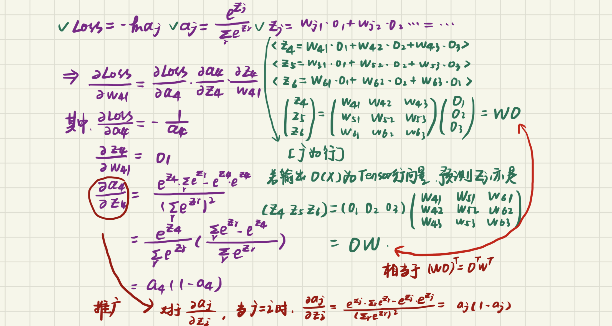
w51…..w63等参数的偏导同理可以求出，那么我们的关键就在于Loss函数对于结点4,5,6的偏导怎么求，如下：
这里分为两种情况：一是当 j=i 时： 比如我选定了 j=4，那么就是说现在求导传到4结点
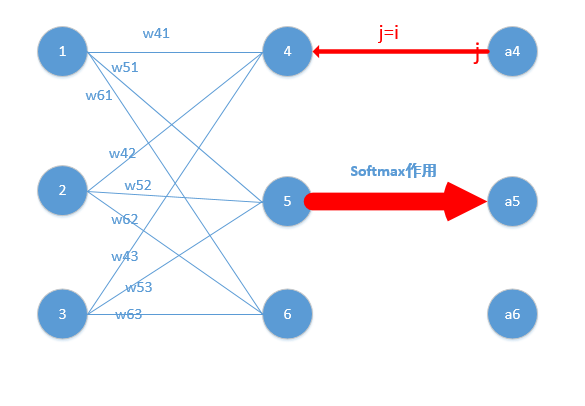
那么由上面求导结果再乘以交叉熵损失函数求导，结果为 ( a j − 1 ) 形式非常简单，这说明只要正向求一次得出结果，然后反向传梯度的时候，只需要将它结果减1即可，后面还会举例子！ ）那么我们可以得到Loss对于4结点的偏导就求出了了（这里假定4是我们的预计输出 ）
第二种情况是当 j≠i 时：往前传
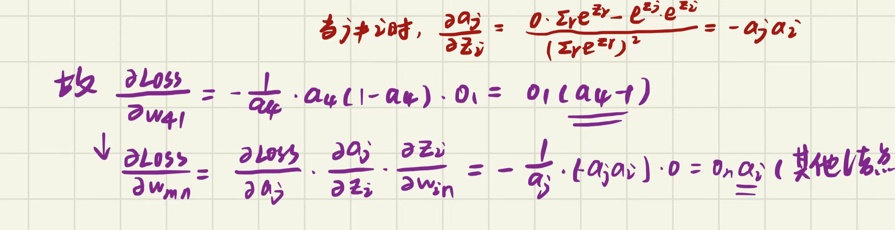
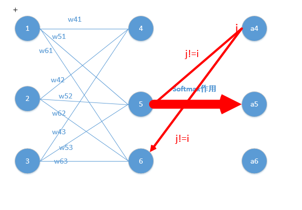
由上面求导结果再乘以交叉熵损失函数求导，结果为（形式非常简单，这说明我只要正向求一次得出结果，然后反向传梯度的时候，只需要将它结果保存即可，后续例子会讲到 ）这里就求出了除4之外的其它所有结点的偏导，然后利用链式法则继续传递过去即可！我们的问题也就解决了！
为什么要对 j?=i 分情况求导？
W参数的更新，不仅仅需要对目标类别的神经元 进行更新，也要更新错误类别的输出神经元 的W参数。这样才能尽快让结果往正确类别去靠。如果只是更新正确类别的神经元参数，那可能会使得收敛速度变慢很多。
也就是说，i = j的时候，更新的只是正确类别的W参数，i !=j时，也更新其他错误类别的参数（两者更新的幅度不一样：学习率是一样的，但是梯度大小不一样）。
1.2 举例：为什么计算会比较方便 举个例子，通过若干层的计算，最后得到的某个训练样本的向量的分数是[ 2, 3, 4 ]，[ e 2 e 2 + e 3 + e 4 , e 2 e 2 + e 3 + e 4 , e 2 e 2 + e 3 + e 4 ] = [ 0.0903 , 0.2447 , 0.665 ]
如果这个样本正确的分类是第二个的话，那么计算出来的偏导就是[0.0903, 0.2447-1, 0.665] = [0.0903, -0.7553, 0.665]，故计算梯度很简单！然后再根据这个进行back propagation就可以了
1.3 Softmax广义求导 参考此处
向量y（为one-hot编码，只有一个值为1，其他的值为0）：真实类别标签(维度为m，表示有m类别) 向量z为softmax函数的输入，m维列向量 向量s为softmax函数的输出，m维列向量
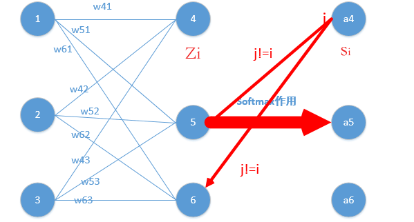
小问题：SVG的居中需要注意的是，SVG默认是内联样式。
交叉熵损失函数：c = − ∑ j = 1 m y j ln s j
损失函数对向量z中的每个zi求偏导：
当 j = i 时：
当 j ≠ i 时：
故有：
损失函数对向量z中的每个zi求偏导：
最后，附一张图对wij求导的过程【存在问题未解决，待补充 】
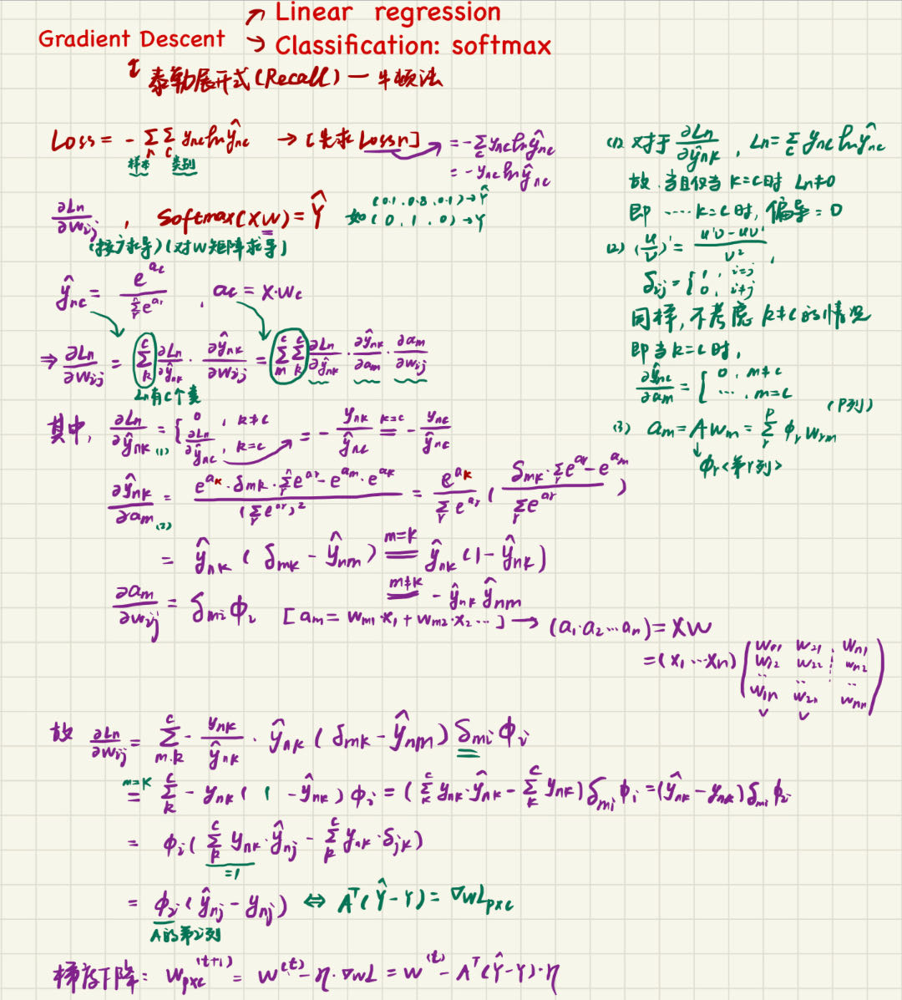
1.4 交叉熵损失优缺点 采用了类间竞争机制，比较擅长于学习类间的信息，但是只关心对于正确标签预测概率的准确性，而忽略了其他非正确标签的差异，从而导致学习到的特征比较散。
使用逻辑函数得到概率，并结合交叉熵当损失函数时，当模型效果差的时，学习速度较快，模型效果好时，学习速度会变慢。
2、损失函数
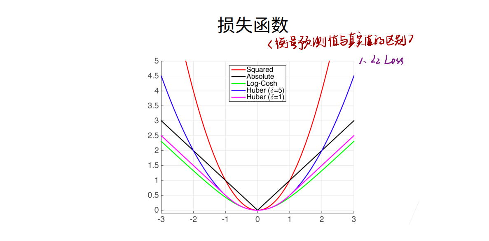
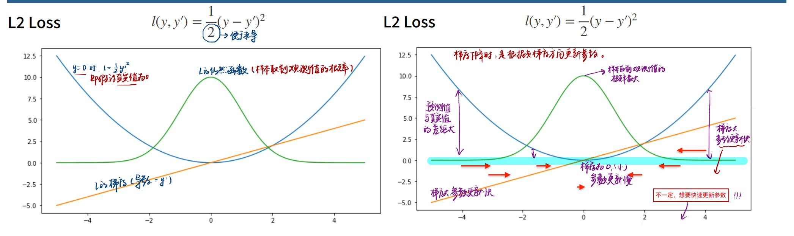
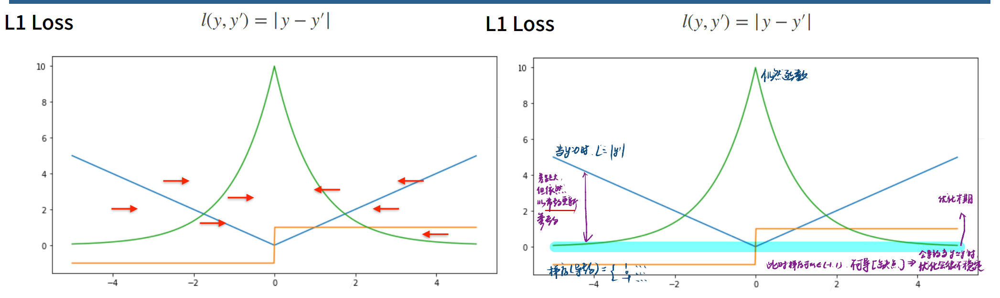
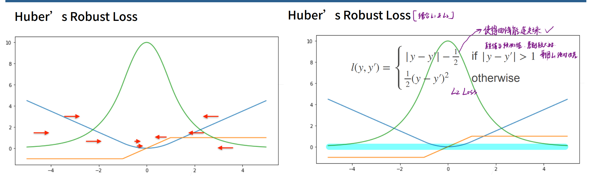
3、图片分类数据集 MNIST数据集是约1986年提出，数据集过于简单，故此处使用Fashion-MNIST
MNIST是一个手写体数字的图片数据集，该数据集来由美国国家标准与技术研究所（National Institute of Standards and Technology (NIST)）发起整理，一共统计了来自250个不同的人手写数字图片，其中50%是高中生，50%来自人口普查局的工作人员。该数据集的收集目的是希望通过算法，实现对手写数字的识别。
1998年，Yan LeCun 等人发表了论文《Gradient-Based Learning Applied to Document Recognition》，首次提出了LeNet-5 网络，利用上述数据集实现了手写字体的识别。
1 2 3 4 5 6 7 8 %matplotlib inline import torchimport torchvision from torch.utils import data from torchvision import transforms from d2l import torch as d2ld2l.use_svg_display()
通过Torchvision框架中的内置函数将 Fashion-MNIST 数据集下载并读取到内存中
1 2 3 4 5 6 7 8 9 10 11 12 13 14 15 16 17 18 19 20 trans = transforms.ToTensor() mnist_train = torchvision.datasets.FashionMNIST(root="../data" , train=True , transform=trans, download=True ) mnist_test = torchvision.datasets.FashionMNIST(root="../data" , train=False , transform=trans, download=True ) len(mnist_train), len(mnist_test) Out: (60000 , 10000 ) In: mnist_train[0 ][0 ].shape Out: torch.Size([1 , 28 , 28 ]) In: len(mnist_train[0 ]) Out: 2
torchvision.datasets.FashionMNIST(...)参数解读：【参考文档 】
root：下载/读取路径train：下载的是否为训练数据transform：读取后的数据的类型download：是否下载两个可视化数据集的函数【get_fashion_mnist_labels】
1 2 3 4 5 6 7 8 9 10 11 12 13 14 15 16 17 18 19 20 21 22 23 24 def get_fashion_mnist_labels (labels ): """返回Fashion-MNIST数据集的文本标签。""" text_labels = [ 't-shirt' , 'trouser' , 'pullover' , 'dress' , 'coat' , 'sandal' , 'shirt' , 'sneaker' , 'bag' , 'ankle boot' ] return [text_labels[int(i)] for i in labels] def show_images (imgs, num_rows, num_cols, titles=None, scale=1.5 ): """Plot a list of images.""" figsize = (num_cols * scale, num_rows * scale) _, axes = d2l.plt.subplots(num_rows, num_cols, figsize=figsize) axes = axes.flatten() for i, (ax, img) in enumerate(zip(axes, imgs)): if torch.is_tensor(img): ax.imshow(img.numpy()) else : ax.imshow(img) ax.axes.get_xaxis().set_visible(False ) ax.axes.get_yaxis().set_visible(False ) if titles: ax.set_title(titles[i]) return axes
几个样本的图像及其相应的标签
1 2 X, y = next(iter(data.DataLoader(mnist_train, batch_size=18 ))) show_images(X.reshape(18 , 28 , 28 ), 2 , 9 , titles=get_fashion_mnist_labels(y))
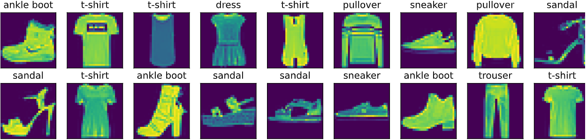
data.DataLoader(mnist_train, batch_size=18)：从mnist_train训练集中拿出batch_size大小的小批量iter()：使用该函数构造出一个iteratornext()：返回该迭代器的第一个元素对于show_images()函数：使用matplotlib画图，传入的X参数进行reshape，丢弃1维通道，分两行，每行9张图片打印，标题来自y标签
1 2 3 In: print(X.shape, y.shape) Out: torch.Size([18 , 1 , 28 , 28 ]) torch.Size([18 ])
1 2 3 4 5 print(figsize) print(d2l.plt.subplots(num_rows, num_cols, figsize=figsize)) Out:
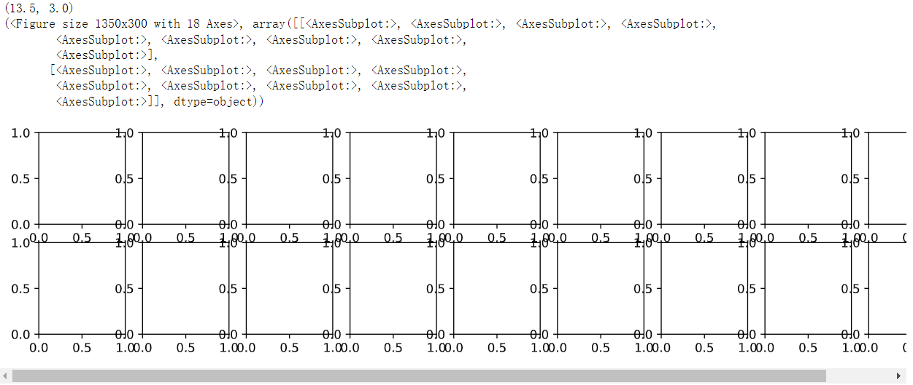
对于get_fashion_mnist_labels(labels)函数：返回一个List，该List是遍历labels索引序列而转换得来的字符串序列，如此处：
1 2 In: get_fashion_mnist_labels([1 ,2 ,3 ,1 ,2 ,2 ]) Out: ['trouser' , 'pullover' , 'dress' , 'trouser' , 'pullover' , 'pullover' ]
……
读取一小批量数据，大小为batch_size
1 2 3 4 5 6 7 8 9 10 11 12 13 14 15 16 17 18 batch_size = 256 def get_dataloader_workers (): """使用4个进程来读取数据。""" return 4 train_iter = data.DataLoader(mnist_train, batch_size, shuffle=True , num_workers=get_dataloader_workers()) timer = d2l.Timer() for X, y in train_iter: continue f'{timer.stop():.2 f} sec' Out: '5.45 sec'
定义 load_data_fashion_mnist 函数
1 2 3 4 5 6 7 8 9 10 11 12 13 14 15 16 17 18 19 20 21 22 23 24 25 26 27 def load_data_fashion_mnist (batch_size, resize=None ): """下载Fashion-MNIST数据集，然后将其加载到内存中。""" trans = [transforms.ToTensor()] if resize: trans.insert(0 , transforms.Resize(resize)) trans = transforms.Compose(trans) mnist_train = torchvision.datasets.FashionMNIST(root="../data" , train=True , transform=trans, download=True ) mnist_test = torchvision.datasets.FashionMNIST(root="../data" , train=False , transform=trans, download=True ) return (data.DataLoader(mnist_train, batch_size, shuffle=True , num_workers=get_dataloader_workers()), data.DataLoader(mnist_test, batch_size, shuffle=False , num_workers=get_dataloader_workers())) train_iter, test_iter = load_data_fashion_mnist(32 , resize=64 ) for X, y in train_iter: print(X.shape, X.dtype, y.shape, y.dtype) break Out: torch.Size([32 , 1 , 64 , 64 ]) torch.float32 torch.Size([32 ]) torch.int64
4、Softmax从零开始实现 1 2 3 4 5 6 7 import torchfrom IPython import displayfrom d2l import torch as d2lbatch_size = 256 train_iter, test_iter = d2l.load_data_fashion_mnist(batch_size)
【Softmax回归的输入是一个向量】将展平每个图像，把它们看作长度为784的向量。 因为我们的数据集有10个类别，所以网络输出维度为 10【此操作会损失空间信息 | 卷积神经网络 】
1 2 3 4 5 6 num_inputs = 784 num_outputs = 10 W = torch.normal(0 , 0.01 , size=(num_inputs, num_outputs), requires_grad=True ) b = torch.zeros(num_outputs, requires_grad=True )
X输入向量【Tensor】：(1×784)，W：(784×10)，b：(1×10)，
另外：回顾矩阵求和【给定矩阵X，对所有元素求和】
1 2 3 4 5 6 7 8 9 In: XX = torch.tensor([[1.0 , 2.0 , 3.0 ], [4.0 , 5.0 , 6.0 ]]) print(XX.shape) XX.sum(0 , keepdim=True ), XX.sum(0 , keepdim=True ).shape, XX.sum(1 , keepdim=True ) Out: torch.Size([2 , 3 ]) (tensor([[5. , 7. , 9. ]]), torch.Size([1 , 3 ]), tensor([[ 6. ], [15. ]]))
实现softmax：s o f t m a x ( X ) i j = e x p ( X i j ) ∑ k e x p ( X i k ) Softmax】
1 2 3 4 def softmax (X ): X_exp = torch.exp(X) partition = X_exp.sum(1 , keepdim=True ) return X_exp / partition
测试该函数：【将每个元素变成一个非负数。此外，依据概率原理，每行总和为1】
1 2 3 4 5 6 7 In: X = torch.normal(0 , 1 , (2 , 5 )) X_prob = softmax(X) X_prob, X_prob.sum(1 ) Out：(tensor([[0.0599 , 0.1886 , 0.5760 , 0.1060 , 0.0695 ], [0.3192 , 0.2758 , 0.0286 , 0.0575 , 0.3189 ]]), tensor([1.0000 , 1.0000 ]))
实现softmax回归模型
1 2 def net (X ): return softmax(torch.matmul(X.reshape(-1 , W.shape[0 ]), W) + b)
X的shape：torch.Size(256, 1, 28, 28])；y.shape = torch.Size([256])
X.reshape(-1, W.shape[0])：-1即未知，通过第二个参数计算得到。其中，W.shape为784×10，W.shape[0]=784。故X.reshape(-1, W.shape[0])后，X形状为256×784
matmul()为矩阵连乘：[256，784] × [784，10] = [256，10]
以下为举例，如何进行【拿取真实类别，在预测值中对应预测的概率】
创建一个数据y_hat，其中包含2个样本在3个类别的预测概率， 使用y作为y_hat中概率的索引
1 2 3 4 5 6 7 y = torch.tensor([0 , 2 ]) y_hat = torch.tensor([[0.1 , 0.3 , 0.6 ], [0.3 , 0.2 , 0.5 ]]) y_hat[[0 , 1 ], y] Out: tensor([0.1000 , 0.5000 ])
实现交叉熵损失函数
1 2 3 4 5 6 7 8 9 def cross_entropy (y_hat, y ): return -torch.log(y_hat[range(len(y_hat)), y]) In: cross_entropy(y_hat, y) Out: tensor([2.3026 , 0.6931 ])
将预测类别与真实 y 元素进行比较
1 2 3 4 5 6 7 8 9 10 def accuracy (y_hat, y ): """计算预测正确的数量。""" if len(y_hat.shape) > 1 and y_hat.shape[1 ] > 1 : y_hat = y_hat.argmax(axis=1 ) cmp = y_hat.type(y.dtype) == y return float(cmp.type(y.dtype).sum()) accuracy(y_hat, y) / len(y) Out: 0.5
我们可以评估在任意模型 net 的准确率【正确预测数 / 预测总数】
1 2 3 4 5 6 7 8 def evaluate_accuracy (net, data_iter ): """计算在指定数据集上模型的精度。""" if isinstance(net, torch.nn.Module): net.eval() metric = Accumulator(2 ) for X, y in data_iter: metric.add(accuracy(net(X), y), y.numel()) return metric[0 ] / metric[1 ]
Accumulator 实例中创建了 2 个变量，用于分别存储正确预测的数量和预测的总数量
1 2 3 4 5 6 7 8 9 10 11 12 13 14 15 16 17 18 19 class Accumulator : """在`n`个变量上累加。""" def __init__ (self, n ): self.data = [0.0 ] * n def add (self, *args ): self.data = [a + float(b) for a, b in zip(self.data, args)] def reset (self ): self.data = [0.0 ] * len(self.data) def __getitem__ (self, idx ): return self.data[idx] evaluate_accuracy(net, test_iter) Out: 0.0307
Softmax回归的训练
1 2 3 4 5 6 7 8 9 10 11 12 13 14 15 16 17 18 19 20 21 def train_epoch_ch3 (net, train_iter, loss, updater ): """训练模型一个迭代周期（定义见第3章）。""" if isinstance(net, torch.nn.Module): net.train() metric = Accumulator(3 ) for X, y in train_iter: y_hat = net(X) l = loss(y_hat, y) if isinstance(updater, torch.optim.Optimizer): updater.zero_grad() l.backward() updater.step() metric.add( float(l) * len(y), accuracy(y_hat, y), y.size().numel()) else : l.sum().backward() updater(X.shape[0 ]) metric.add(float(l.sum()), accuracy(y_hat, y), y.numel()) return metric[0 ] / metric[2 ], metric[1 ] / metric[2 ]
定义一个在动画中绘制数据的实用程序类【辅助函数：可视化训练过程】
1 2 3 4 5 6 7 8 9 10 11 12 13 14 15 16 17 18 19 20 21 22 23 24 25 26 27 28 29 30 31 32 33 34 35 36 class Animator : """在动画中绘制数据。""" def __init__ (self, xlabel=None, ylabel=None, legend=None, xlim=None, ylim=None, xscale='linear' , yscale='linear' , fmts=('-' , 'm--' , 'g-.' , 'r:' 1 , ncols=1 , figsize=(3.5 , 2.5 ): if legend is None : legend = [] d2l.use_svg_display() self.fig, self.axes = d2l.plt.subplots(nrows, ncols, figsize=figsize) if nrows * ncols == 1 : self.axes = [self.axes,] self.config_axes = lambda : d2l.set_axes(self.axes[ 0 ], xlabel, ylabel, xlim, ylim, xscale, yscale, legend) self.X, self.Y, self.fmts = None , None , fmts def add (self, x, y ): if not hasattr(y, "__len__" ): y = [y] n = len(y) if not hasattr(x, "__len__" ): x = [x] * n if not self.X: self.X = [[] for _ in range(n)] if not self.Y: self.Y = [[] for _ in range(n)] for i, (a, b) in enumerate(zip(x, y)): if a is not None and b is not None : self.X[i].append(a) self.Y[i].append(b) self.axes[0 ].cla() for x, y, fmt in zip(self.X, self.Y, self.fmts): self.axes[0 ].plot(x, y, fmt) self.config_axes() display.display(self.fig) display.clear_output(wait=True )
训练函数
1 2 3 4 5 6 7 8 9 10 11 12 13 14 def train_ch3 (net, train_iter, test_iter, loss, num_epochs, updater ): """训练模型（定义见第3章）。""" animator = Animator(xlabel='epoch' , xlim=[1 , num_epochs], ylim=[0.3 , 0.9 ], legend=['train loss' , 'train acc' , 'test acc' ]) for epoch in range(num_epochs): train_metrics = train_epoch_ch3(net, train_iter, loss, updater) test_acc = evaluate_accuracy(net, test_iter) animator.add(epoch + 1 , train_metrics + (test_acc,)) train_loss, train_acc = train_metrics assert train_loss < 0.5 , train_loss assert train_acc <= 1 and train_acc > 0.7 , train_acc assert test_acc <= 1 and test_acc > 0.7 , test_acc
小批量随机梯度下降来优化模型的损失函数
1 2 3 4 lr = 0.1 def updater (batch_size ): return d2l.sgd([W, b], lr, batch_size)
训练模型10个迭代周期
1 2 num_epochs = 10 train_ch3(net, train_iter, test_iter, cross_entropy, num_epochs, updater)
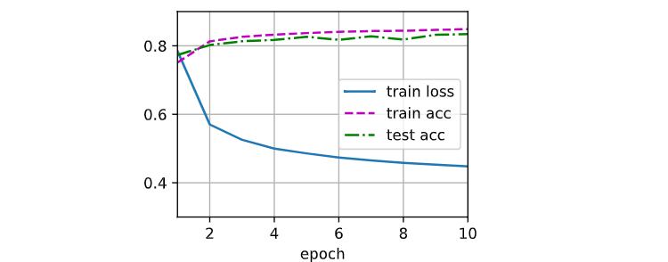
异常 ：有可能 train_loss不显示，根据log可知是loss太小了，无法显示
对图像进行分类预测
1 2 3 4 5 6 7 8 9 10 def predict_ch3 (net, test_iter, n=6 ): """预测标签（定义见第3章）。""" for X, y in test_iter: break trues = d2l.get_fashion_mnist_labels(y) preds = d2l.get_fashion_mnist_labels(net(X).argmax(axis=1 )) titles = [true + '\n' + pred for true, pred in zip(trues, preds)] d2l.show_images(X[0 :n].reshape((n, 28 , 28 )), 1 , n, titles=titles[0 :n]) predict_ch3(net, test_iter)
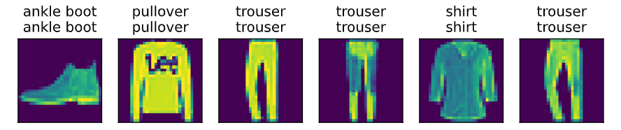
5、Softmax简洁实现 通过深度学习框架的高级API能够使实现 softmax 回归变得更加容易
1 2 3 4 5 6 import torchfrom torch import nnfrom d2l import torch as d2lbatch_size = 256 train_iter, test_iter = d2l.load_data_fashion_mnist(batch_size)
Softmax 回归的输出层是一个全连接层
1 2 3 4 5 6 7 8 9 10 net = nn.Sequential(nn.Flatten(), nn.Linear(784 , 10 )) def init_weights (m ): if type(m) == nn.Linear: nn.init.normal_(m.weight, std=0.01 ) net.apply(init_weights)
在交叉熵损失函数中传递未归一化的预测，并同时计算softmax及其对数
1 loss = nn.CrossEntropyLoss()
使用学习率为0.1的小批量随机梯度下降作为优化算法
1 trainer = torch.optim.SGD(net.parameters(), lr=0.1 )
调用 之前 定义的训练函数来训练模型
1 2 num_epochs = 10 d2l.train_ch3(net, train_iter, test_iter, loss, num_epochs, trainer)
6、Softmax回归 Q&A 6.1 Softlabel的训练策略？为什么有效？ Soft label与Hard Label对应，先参考此文章 ，该文章来从标签平滑 和知识蒸馏 理解，探讨一下hard label和soft label之间的关系。
深度学习领域中，通常将数据标注为hard label，但事实上同一个数据包含不同类别的信息，直接标注为hard label会导致大量信息的损失，进而影响最终模型取得的效果。
【挖一个坑，此处不太理解，沐神说 ：Hard-Label的问题在于，使用指数来不断逼近真实值的0或1，需要输出为无穷大，其他的输出很小，这显然难度很大；因此，提出对正确类赋为0.9，其他的为0.1/n，这样的情况下，是可以用Softmax来逼近0.9或0.1的】
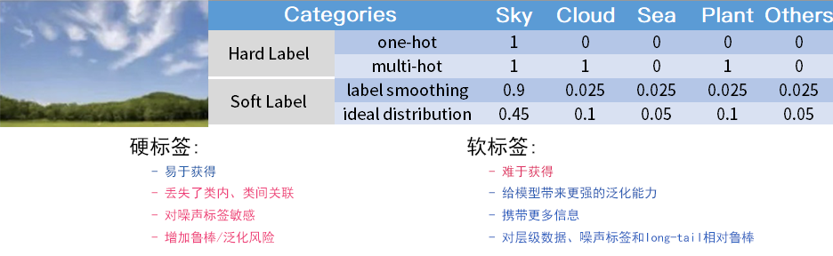
6.2 Softmax回归与Logistic回归？ Logistic Regression是针对二分类问题，是Softmax回归的特例，但实际情况下都是多分类问题，故跳过。
另外，对于二分类的预测，只需要对1或0进行预测，另一个必然是（1-预测值）
6.3 为什么用交叉熵作为损失函数？相对熵、互信息？ 交叉熵简单；相互熵好处在于H(p, q) = H(q, p)；互信息不好算。总之，我们只关心两个概率之间的距离。
6.4 这样的N分类问题，只认为有一个正类、n-1个负类，会不会不平衡？ 会有这样的情况。如果用one-hot编码，其实并不关心负类会怎么样。但是，需要注意的是 ，如果某一个类别的样本过少，必然会导致不平衡，即模型不准确
6.5 MSE的最大似然函数？参考意义？ 这是统计学的概念，意义在于可以解释模型为什么好。
其实，最小化损失，就等价于最大化似然函数【似然函数，就说是对于一个模型，即参数权重，使得模型的预测值等于真实值的概率最大】【此处有个最大似然的坑需要填 】
6.6 梯度下降的速度和学习的率的关系 对于权重w/b的更新有两项，一项是负梯度【不同时的损失函数，其梯度不同】，另一项是学习率【人为控制】。
6.7 Little Problems 如果数据下载出现HTTP Error的问题【从pytorch官网上自动下载】：官网上有如何进行手动下载的教程【Browse State-of-the-Art ：数据集下载 | 手动数据集下载教程 】
data.DataLoader中的num_workers?
该参数标志使用多少进程并行执行
关于自己构建数据集，如何用pytorch读入？
【沐神说，假如十个类，猫的图片在一个文件夹中，狗的图片在一个文件夹中，分好类，这样是可以被pytorch读入的】【参考社区中文文档 】
十一、多层感知机 1、感知机 感知机 、训练感知机
收敛定理、XOR问题
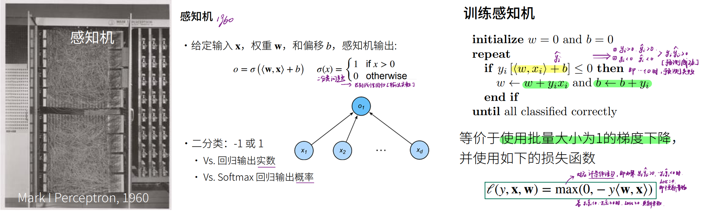
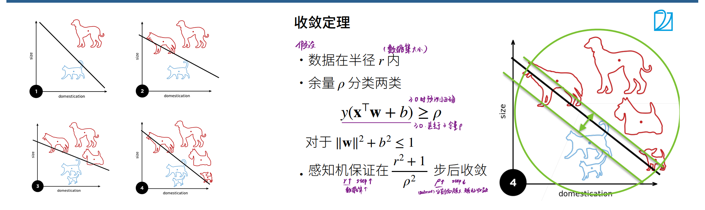
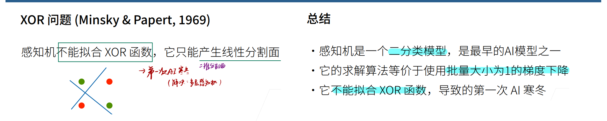
2、多层感知机 学习XOR问题、单隐藏层-单分类、多类分类、多隐藏层
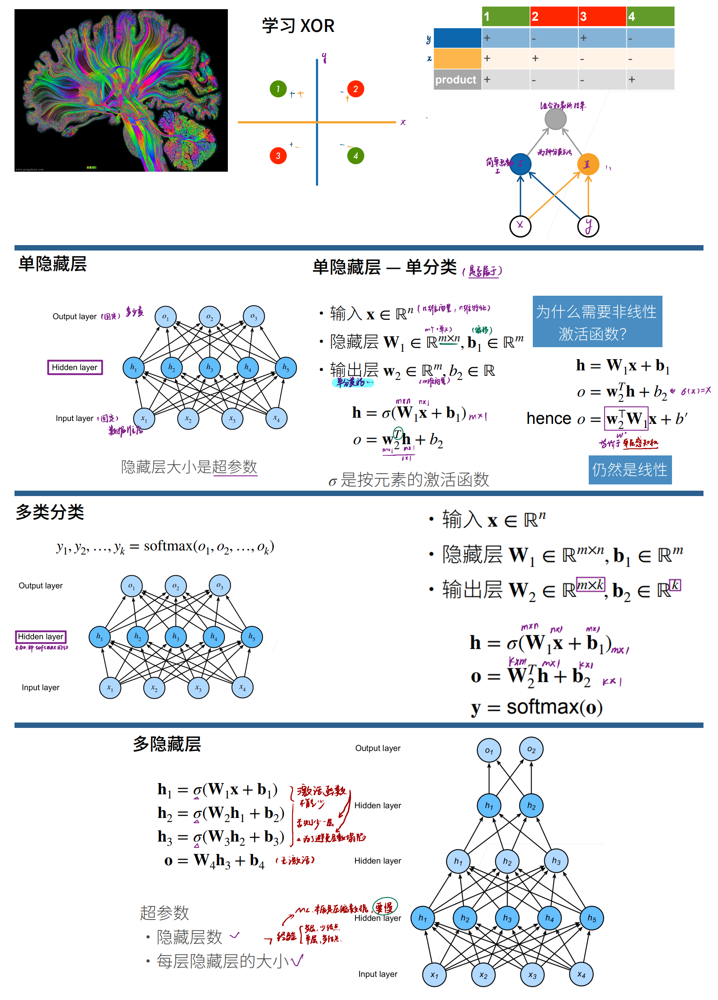
总结
多层感知机使用隐藏层和激活函数来得到非线性模型 常用的激活函数是Sigmoid | Tanh | ReLU 使用Softmax来处理多类分类 超参数：隐藏层数、各隐藏层大小 知道如何结合非线性函数来构建具有更强表达能力的多层神经网络结构，但是具体在哪里使用哪些函数要积累经验 3、常见的激活函数
1 2 3 %matplotlib inline import torchfrom d2l import torch as d2l
ReLU提供了一种非常简单的非线性变换
1 2 3 4 5 6 7 x = torch.arange(-8.0 , 8.0 , 0.1 , requires_grad=True ) y = torch.relu(x) d2l.plot(x.detach(), y.detach(), 'x' , 'relu(x)' , figsize=(5 , 2.5 ))
🔺 画图的时候tesnsor类不能做参数，要用.detach()
🔺plt.figure设置幕布：fig = plt.figure(figsize=(w, h), dpi=dpi)。【缺省时，w=6.4, h=4.8；如果dpi=100, 则图片属性中的分辨率为640*480】【参考文章 】
1 2 y.backward(torch.ones_like(x), retain_graph=True ) d2l.plot(x.detach(), x.grad, 'x' , 'grad of relu' , figsize=(5 , 2.5 ))
对于一个定义域在R中的输入，sigmoid函数 将输入变换为区间(0, 1)上的输出
1 2 y = torch.sigmoid(x) d2l.plot(x.detach(), y.detach(), 'x' , 'sigmoid(x)' , figsize=(5 , 2.5 ))
1 2 3 x.grad.data.zero_() y.backward(torch.ones_like(x), retain_graph=True ) d2l.plot(x.detach(), x.grad, 'x' , 'grad of sigmoid' , figsize=(5 , 2.5 ))
Tanh(双曲正切)函数也能将其输入压缩转换到区间(-1, 1)上
1 2 y = torch.tanh(x) d2l.plot(x.detach(), y.detach(), 'x' , 'tanh(x)' , figsize=(5 , 2.5 ))
1 2 3 x.grad.data.zero_() y.backward(torch.ones_like(x), retain_graph=True ) d2l.plot(x.detach(), x.grad, 'x' , 'grad of tanh' , figsize=(5 , 2.5 ))
4、多层感知机代码实现 1 2 3 4 5 6 import torchfrom torch import nnfrom d2l import torch as d2lbatch_size = 256 train_iter, test_iter = d2l.load_data_fashion_mnist(batch_size)
实现一个具有单隐藏层的多层感知机，它包含256个隐藏单元
1 2 3 4 5 6 7 8 9 10 11 12 13 14 num_inputs, num_outputs, num_hiddens = 784 , 10 , 256 W1 = nn.Parameter( torch.randn(num_inputs, num_hiddens, requires_grad=True ) * 0.01 ) b1 = nn.Parameter(torch.zeros(num_hiddens, requires_grad=True )) W2 = nn.Parameter( torch.randn(num_hiddens, num_outputs, requires_grad=True ) * 0.01 ) b2 = nn.Parameter(torch.zeros(num_outputs, requires_grad=True )) params = [W1, b1, W2, b2]
🔺当参数W1随机为0时，似乎无影响；当W1W2均为0时，d2l.train_ch3函数中的assert断言错误
实现ReLU激活函数
1 2 3 def relu (X ): a = torch.zeros_like(X) return torch.max(X, a)
实现我们的模型
1 2 3 4 5 6 def net (X ): X = X.reshape((-1 , num_inputs)) H = relu(X @ W1 + b1) return (H @ W2 + b2) loss = nn.CrossEntropyLoss()
@：矩阵乘法，即torch.matmul(x，y)
多层感知机的训练过程与softmax回归的训练过程完全相同
1 2 3 num_epochs, lr = 10 , 0.1 updater = torch.optim.SGD(params, lr=lr) d2l.train_ch3(net, train_iter, test_iter, loss, num_epochs, updater)
在一些测试数据上应用这个模型
1 d2l.predict_ch3(net, test_iter)
5、多层感知机简单实现 通过高级API更简洁地实现多层感知机
1 2 3 import torchfrom torch import nnfrom d2l import torch as d2l
隐藏层 包含256个隐藏单元，并使用了ReLU激活函数
1 2 3 4 5 6 7 8 net = nn.Sequential(nn.Flatten(), nn.Linear(784 , 256 ), nn.ReLU(), nn.Linear(256 , 10 )) def init_weights (m ): if type(m) == nn.Linear: nn.init.normal_(m.weight, std=0.01 ) net.apply(init_weights);
训练过程
1 2 3 4 5 6 batch_size, lr, num_epochs = 256 , 0.1 , 10 loss = nn.CrossEntropyLoss() trainer = torch.optim.SGD(net.parameters(), lr=lr) train_iter, test_iter = d2l.load_data_fashion_mnist(batch_size) d2l.train_ch3(net, train_iter, test_iter, loss, num_epochs, trainer)
6、Q&A 6.1 Little Problems 通常神经网络中的一层是指带权重的一层，即包含激活函数【每一层都有一批可学习的参数】 收敛定理中的ρ和r统计学概念，机器学习关注的计算，想算出ρ和r是很难的 SVM替代了多层感知机【SVM对超参数不敏感；SVM优化较容易；二者效果差不多，但SVM使用较简单、数学基础好。此处不介绍SVM，是因为SVM要换一套优化函数不使用sgd】 理论上，一层【隐藏层+激活函数】可以拟合任何函数，但实际上优化算法无法求解。 最好不要是动态的神经网络，最好保证模型的稳定 6.2 为什么要增加隐藏层层数，而不是增加神经元个数？ 两种做法：一种是瘦子【层数多，节点少】，一种是胖子【层数少，节点多】，这两种的模型复杂度差不多。
但是，胖子不好训练！胖子，俗称 浅度学习 ；瘦子，俗称 深度学习 【训练更容易】。
因为，胖子学习极其容易过拟合 【协调大量神经元，一次吃个大胖子】
6.3 ReLU为什么有用？激活函数的本质是什么？ ReLU函数是一个分段线性函数，即非线性函数【线性函数是一根线】。激活函数的本质是引入非线性性，而已！
激活函数的选择，远远没有选择超参数大小来的重要！
十二、模型选择与过/欠拟合 1、模型选择 训练误差、泛化误差
验证数据集、测试数据集
K-则交叉验证
2、过拟合和欠拟合 模型容量及影响
VC维
数据复杂度
总结
模型容量需要匹配数据复杂度 ，否则可能会导致欠拟合或过拟合 统计机器学习提供数学工具来衡量模型复杂度 实际中一般靠观察训练误差 和验证误差 3、代码理解 通过多项式拟合来交互地探索这些概念
1 2 3 4 5 import mathimport numpy as npimport torchfrom torch import nnfrom d2l import torch as d2l
使用以下三阶多项式来生成训练和测试数据的标签【以下先生成人工数据集】：
1 2 3 4 5 6 7 8 9 10 11 12 13 14 15 16 max_degree = 20 n_train, n_test = 100 , 100 true_w = np.zeros(max_degree) true_w[0 :4 ] = np.array([5 , 1.2 , -3.4 , 5.6 ]) features = np.random.normal(size=(n_train + n_test, 1 )) np.random.shuffle(features) poly_features = np.power(features, np.arange(max_degree).reshape(1 , -1 )) for i in range(max_degree): poly_features[:, i] /= math.gamma(i + 1 ) labels = np.dot(poly_features, true_w) labels += np.random.normal(scale=0.1 , size=labels.shape)
此处的 math.gamm() 函数，即伽马函数。Gamma函数是对正实数进行的一种扩展，定义如下：
当z为自然数时，Gamma函数等于阶乘，即
对于非自然数，Gamma函数的值是无法用基本的算术运算来计算的，必须使用数值逼近等计算方法。因此，在Go语言中，Gamma函数的计算也是不可避免的。
看一下前2个样本
1 2 3 4 5 6 7 8 9 10 11 12 13 14 15 16 17 true_w, features, poly_features, labels = [ torch.tensor(x, dtype=torch.float32) for x in [true_w, features, poly_features, labels]] features[:2 ], poly_features[:2 , :], labels[:2 ] Out: (tensor([[1.8354 ],[0.2099 ]]), tensor([[1.0000e+00 , 1.8354e+00 , 1.6843e+00 , 1.0304e+00 , 4.7280e-01 , 1.7355e-01 , 5.3088e-02 , 1.3919e-02 , 3.1934e-03 , 6.5122e-04 , 1.1952e-04 , 1.9943e-05 , 3.0501e-06 , 4.3062e-07 , 5.6454e-08 , 6.9075e-09 , 7.9236e-10 , 8.5545e-11 , 8.7226e-12 , 8.4258e-13 ], [1.0000e+00 , 2.0988e-01 , 2.2025e-02 , 1.5409e-03 , 8.0851e-05 , 3.3938e-06 , 1.1872e-07 , 3.5595e-09 , 9.3385e-11 , 2.1778e-12 , 4.5707e-14 , 8.7210e-16 , 1.5253e-17 , 2.4626e-19 , 3.6918e-21 , 5.1656e-23 , 6.7760e-25 , 8.3657e-27 , 9.7544e-29 , 1.0775e-30 ]]), tensor([7.2075 , 5.0886 ]))
实现一个函数来评估模型在给定数据集上的损失
1 2 3 4 5 6 7 8 9 def evaluate_loss (net, data_iter, loss ): """评估给定数据集上模型的损失。""" metric = d2l.Accumulator(2 ) for X, y in data_iter: out = net(X) y = y.reshape(out.shape) l = loss(out, y) metric.add(l.sum(), l.numel()) return metric[0 ] / metric[1 ]
定义训练函数
1 2 3 4 5 6 7 8 9 10 11 12 13 14 15 16 17 18 19 20 def train (train_features, test_features, train_labels, test_labels, num_epochs=400 ): loss = nn.MSELoss() input_shape = train_features.shape[-1 ] net = nn.Sequential(nn.Linear(input_shape, 1 , bias=False )) batch_size = min(10 , train_labels.shape[0 ]) train_iter = d2l.load_array((train_features, train_labels.reshape(-1 , 1 )), batch_size) test_iter = d2l.load_array((test_features, test_labels.reshape(-1 , 1 )), batch_size, is_train=False ) trainer = torch.optim.SGD(net.parameters(), lr=0.01 ) animator = d2l.Animator(xlabel='epoch' , ylabel='loss' , yscale='log' , xlim=[1 , num_epochs], ylim=[1e-3 , 1e2 ], legend=['train' , 'test' ]) for epoch in range(num_epochs): d2l.train_epoch_ch3(net, train_iter, loss, trainer) if epoch == 0 or (epoch + 1 ) % 20 == 0 : animator.add(epoch + 1 , (evaluate_loss( net, train_iter, loss), evaluate_loss(net, test_iter, loss))) print('weight:' , net[0 ].weight.data.numpy())
三阶多项式函数拟合(正态)
1 2 3 4 train(poly_features[:n_train, :4 ], poly_features[n_train:, :4 ], labels[:n_train], labels[n_train:]) Out: weight: [[ 4.994806 1.2026892 -3.390093 5.61095 ]]
线性函数拟合(欠拟合)
1 2 3 4 5 6 train(poly_features[:n_train, :2 ], poly_features[n_train:, :2 ], labels[:n_train], labels[n_train:]) Out: weight: [[3.4597428 3.9528937 ]]
高阶多项式函数拟合(过拟合)
1 2 3 4 5 6 7 8 9 10 train(poly_features[:n_train, :], poly_features[n_train:, :], labels[:n_train], labels[n_train:], num_epochs=1500 ) Out: weight: [[ 4.9564543e+00 1.2192174e+00 -3.2015967e+00 5.4091620e+00 -5.5862081e-01 9.4079292e-01 1.6903839e-01 -1.2290818e-01 1.0401705e-02 -4.0972054e-02 8.2412558e-03 -5.3764634e-02 -6.9650121e-02 -1.5937085e-01 -4.1621658e-03 9.0129197e-02 -8.8063665e-02 -1.5993164e-01 1.6256860e-02 2.6524325e-03 ]]
4、Q&A 4.1 Little Problems SVM使用kernel来匹配模型复杂度的，计算复杂，适用于小数据量；SVM参数可调性较差 神经网络是一种“语言”，模型可编程性很强，可通过卷积做特征的提取，集特征提取和分类与一体；而SVM本身是一个分类器 模型剪枝，是为了让模型精简，让小模型运行更快 超参数的设计，一般靠研究者的经验，不要太大，也不要大小。调整方法，最简单的就是所谓老中医，自己训练自己调；其次就是随机超参数【推荐】 ，比如随机100次训练，选取效果最好的超参数； 贝叶斯的方法需要训练1000或10000次之后效果才会好起来【关于HPO，超参数选择】 假设有一个二分类问题，实际样本数据的情况为1：9。此时，如果数据集比较小，建议验证集的正反比例为1：1。否则，验证集很容易做到精度90%，比如把所有数据都判正或负。 SVM流行，多层感知机没落，是因为SVM有数学基础推理，但效果没有好多少；后来深度学习CNN流行，是因为效果好 MLP【Multilayer Perceptron】理论上可以拟合任意函数，但实际上并不能 4.2 验证数据集和训练数据体的数据清理 Q： 验证数据集和训练数据体的数据清理（如异常值的处理）和特征构建（如标准化）是否需要放在一起处理？
A： 做标准化【即数据减去均值，再除以方差】，而均值方差怎么算？两种做法。
一种是训练集和验证集放在一起求均值方差，因为并没有涉及标号，故该方法在实际生产中是可行的； 另一种是只在训练集上求均值方差，该方法比较保险【或者说，你只能拿到训练数据】 4.3 关于K折交叉验证 K则交叉验证需要做K次，学习成本高，故在深度学习中，较大数据集上一般不用；但话说回来，K则交叉验证是当数据量不足的时候使用
K则交叉验证的目的 是确定超参数 。一般做法是，确定超参数后，在所有训练集上再训练一次得到模型参数；第二是不再训练，选择效果最好的那一折的模型；第三种是当预测的时候，使用K个模型进行预测，然后取预测值的均值
K则交叉验证一般是第一次分完组，之后就不再分组；而每次在打乱再分组的做法也可以，但这种做法的目的应该是为了得到K个模型
十三、权重衰退 权重衰退【Weight Decay】，是最常见的处理过拟合 的方法【硬性 | 柔性】
1、权重衰退
2、代码理解 2.1 从零实现 权重衰减是最广泛使用的正则化的技术之一
1 2 3 4 %matplotlib inline import torchfrom torch import nnfrom d2l import torch as d2l
像以前一样生成一些数据 y = 0.05 + ∑ i = 1 d 0.01 x i + ϵ w h e r e ϵ ∼ N ( 0 , 0.01 2 )
1 2 3 4 5 6 7 8 n_train, n_test, num_inputs, batch_size = 20 , 100 , 200 , 5 true_w, true_b = torch.ones((num_inputs, 1 )) * 0.01 , 0.05 train_data = d2l.synthetic_data(true_w, true_b, n_train) train_iter = d2l.load_array(train_data, batch_size) test_data = d2l.synthetic_data(true_w, true_b, n_test) test_iter = d2l.load_array(test_data, batch_size, is_train=False )
初始化模型参数
1 2 3 4 def init_params (): w = torch.normal(0 , 1 , size=(num_inputs, 1 ), requires_grad=True ) b = torch.zeros(1 , requires_grad=True ) return [w, b]
定义L2范数惩罚【L2范数定义】
1 2 def l2_penalty (w ): return torch.sum(w.pow(2 )) / 2
定义训练代码实现
1 2 3 4 5 6 7 8 9 10 11 12 13 14 15 16 17 def train (lambd ): w, b = init_params() net, loss = lambda X: d2l.linreg(X, w, b), d2l.squared_loss num_epochs, lr = 100 , 0.003 animator = d2l.Animator(xlabel='epochs' , ylabel='loss' , yscale='log' , xlim=[5 , num_epochs], legend=['train' , 'test' ]) for epoch in range(num_epochs): for X, y in train_iter: l = loss(net(X), y) + lambd * l2_penalty(w) l.sum().backward() d2l.sgd([w, b], lr, batch_size) if (epoch + 1 ) % 5 == 0 : animator.add(epoch + 1 , (d2l.evaluate_loss(net, train_iter, loss), d2l.evaluate_loss(net, test_iter, loss))) print('w的L2范数是：' , torch.norm(w).item())
忽略正则化直接训练
1 2 3 4 train(lambd=0 ) Out: w的L2范数是： 13.317912101745605
此时，loss不断下降，但验证集正确率不变，这是典型的过拟合
使用权重衰减
1 2 3 4 train(lambd=3 ) Out: w的L2范数是： 0.36755216121673584
“阀”使得权重不会太大。🔺此处可尝试调整 λ 更大 ，但可能会欠拟合
2.2 简洁实现 1 2 3 4 5 6 7 8 9 10 11 12 13 14 15 16 17 18 19 20 21 22 23 24 def train_concise (wd ): net = nn.Sequential(nn.Linear(num_inputs, 1 )) for param in net.parameters(): param.data.normal_() loss = nn.MSELoss() num_epochs, lr = 100 , 0.003 trainer = torch.optim.SGD([{ "params" : net[0 ].weight, 'weight_decay' : wd}, { "params" : net[0 ].bias}], lr=lr) animator = d2l.Animator(xlabel='epochs' , ylabel='loss' , yscale='log' , xlim=[5 , num_epochs], legend=['train' , 'test' ]) for epoch in range(num_epochs): for X, y in train_iter: with torch.enable_grad(): trainer.zero_grad() l = loss(net(X), y) l.backward() trainer.step() if (epoch + 1 ) % 5 == 0 : animator.add(epoch + 1 , (d2l.evaluate_loss(net, train_iter, loss), d2l.evaluate_loss(net, test_iter, loss))) print('w的L2范数：' , net[0 ].weight.norm().item())
这些图看起来和我们从零开始实现权重衰减时的图相同
1 2 3 4 5 6 7 8 9 train_concise(0 ) Out: w的L2范数： 13.924778938293457 train_concise(3 ) Out: w的L2范数： 0.3728162348270416
3、Q&A 3.1 Little Problems 实践中权重衰退的值一般取0.1、0.01、0.001、0.0001等，效果会有，但优化力度不够，之后会有更多的模型复杂度控制。 【λ阀值的意义】由于噪音的存在，模型会尝试记住噪音，将过大权值w拉回真实权重而去忽略噪音，避免过拟合。阀值λ，控制拉回的幅度，即λ小，纠正幅度小；λ大，纠正幅度大。当然，如果数据没有噪音，λ的存在就没有了意义。 3.2 为什么参数不大，复杂度就低？ 如果在比较小的范围取参数权重w，那么模型的空间就会变小。
以《…硬性限制》为例子，如果参数选择比较大，我们可以使用很复杂的曲线去拟合；而此时，我们限制w的范围，使其处于一个范围，这样模型复杂度会变低，也学不出复杂模型。
十四、丢弃法 1、Dropout 目前主流的多层感知机模型大小的一个控制办法
2、代码理解 我们实现 dropout_layer 函数，该函数以dropout的概率丢弃张量输入X中的元素
1 2 3 4 5 6 7 8 9 10 11 12 13 14 import torchfrom torch import nnfrom d2l import torch as d2ldef dropout_layer (X, dropout ): assert 0 <= dropout <= 1 if dropout == 1 : return torch.zeros_like(X) if dropout == 0 : return X mask = (torch.randn(X.shape) > dropout).float() return mask * X / (1.0 - dropout)
测试dropout_layer函数
1 2 3 4 5 6 7 8 9 10 11 12 13 14 15 X = torch.arange(16 , dtype=torch.float32).reshape((2 , 8 )) print(X) print(dropout_layer(X, 0. )) print(dropout_layer(X, 0.5 )) print(dropout_layer(X, 1. )) Out: tensor([[ 0. , 1. , 2. , 3. , 4. , 5. , 6. , 7. ], [ 8. , 9. , 10. , 11. , 12. , 13. , 14. , 15. ]]) tensor([[ 0. , 1. , 2. , 3. , 4. , 5. , 6. , 7. ], [ 8. , 9. , 10. , 11. , 12. , 13. , 14. , 15. ]]) tensor([[ 0. , 0. , 0. , 6. , 0. , 0. , 0. , 14. ], [ 0. , 18. , 20. , 0. , 24. , 0. , 28. , 0. ]]) tensor([[0. , 0. , 0. , 0. , 0. , 0. , 0. , 0. ], [0. , 0. , 0. , 0. , 0. , 0. , 0. , 0. ]])
定义具有两个隐藏层的多层感知机，每个隐藏层包含256个单元
1 2 3 4 5 6 7 8 9 10 11 12 13 14 15 16 17 18 19 20 21 22 23 24 25 26 27 28 29 num_inputs, num_outputs, num_hiddens1, num_hiddens2 = 784 , 10 , 256 , 256 dropout1, dropout2 = 0.2 , 0.5 class Net (nn.Module ): def __init__ (self, num_inputs, num_outputs, num_hiddens1, num_hiddens2, is_training=True ): super(Net, self).__init__() self.num_inputs = num_inputs self.training = is_training self.lin1 = nn.Linear(num_inputs, num_hiddens1) self.lin2 = nn.Linear(num_hiddens1, num_hiddens2) self.lin3 = nn.Linear(num_hiddens2, num_outputs) self.relu = nn.ReLU() def forward (self, X ): H1 = self.relu(self.lin1(X.reshape((-1 , self.num_inputs)))) if self.training == True : H1 = dropout_layer(H1, dropout1) H2 = self.relu(self.lin2(H1)) if self.training == True : H2 = dropout_layer(H2, dropout2) out = self.lin3(H2) return out net = Net(num_inputs, num_outputs, num_hiddens1, num_hiddens2)
训练和测试
1 2 3 4 5 num_epochs, lr, batch_size = 10 , 0.5 , 256 loss = nn.CrossEntropyLoss() train_iter, test_iter = d2l.load_data_fashion_mnist(batch_size) trainer = torch.optim.SGD(net.parameters(), lr=lr) d2l.train_ch3(net, train_iter, test_iter, loss, num_epochs, trainer)
如果dropout=0，训练loss会很小，容易过拟合
因此，在有dropout的情况下，可以适当将隐藏层变的大一点
简洁实现
1 2 3 4 5 6 7 8 9 net = nn.Sequential(nn.Flatten(), nn.Linear(784 , 256 ), nn.ReLU(), nn.Dropout(dropout1), nn.Linear(256 , 256 ), nn.ReLU(), nn.Dropout(dropout2), nn.Linear(256 , 10 )) def init_weights (m ): if type(m) == nn.Linear: nn.init.normal_(m.weight, std=0.01 ) net.apply(init_weights);
对模型进行训练和测试
1 2 trainer = torch.optim.SGD(net.parameters(), lr=lr) d2l.train_ch3(net, train_iter, test_iter, loss, num_epochs, trainer)
3、Q&A 3.1 Little Problems Dropout随机置零之后，相应的梯度也会置零，未置零的项也会相应乘一个值【相当于每次从网络中随机采样一个小网络】 Dropout，包括神经网络，其可重复性一直就是一个比较难的问题【但Dropout相对较好，如果固定随机种子 ，重复Run 10次结果基本一样】但话说回来，不需要可重复性，随机性越高，模型稳定性也越好 BN是给卷积层 用的，Dropout是给全连接层 用的 再次强调：【推理中的Dropout是直接返回输入】Dropout是一个正则项，作用的为了当你更新权重的时候，让模型复杂度降低，减弱过拟合；而做推理或预测，是直接使用参数，不更新参数。当然，如果在推理时Dropout，会导致预测值不稳定，可能需要多次预测再平均。 Dropout每次随机选几个子网络，最后做平均的做法，类似于随机森林多决策树做投票的思想 Dropout和Weight Decay都属于正则，前者主要应用于全连接层，后者可应用于卷积、Transform都可以用。Dropout的优势在于好调参，很直观，即丢弃多少 MLP也用的越来越少，其性能好但不好调参。当然，目前更常用CNN，其实是MLP的一个特例。 Dropout有可能会导致参数收敛减慢，经验上与lr无关【LearningRate对期望和方差敏感】 3.2 Dropout函数返回值相关 Q： Dropout函数返回值的表达式【return X*mask/(1-p)】，未被丢弃的部分会除以（1-p），但训练数据的标签还是原来的值，如何保持对应？
A： Dropout唯一改变的隐藏层的输出，标签并不改变【改标签也常用，属于正则化手法，可能在CV设涉及】。除以(1-p)之后，期望不变决定了输出值与标签的对应。
例如，dropout=0.5，即训练时，有一半的神经元设为0，剩余神经元会乘以2，故期望不会发生变化
十五、数值稳定性、模型初始化、激活函数 1、数值稳定性 特别是当神经网络变的很深时，数值很容易不稳定
2、模型初始化和激活函数
总结 合理的权重初始值和激活函数的选取，可以提升数值稳定性
3、Q&A 3.1 Little Problems Infinite值是太大了，一般是lr过大 或者初始权重过大 【调整缩小方差】；而NAN一般是除0错误，可能是已经梯度过小 python默认float16位，但芯片硬件倾向于做更低位的运算，8位甚至1位 梯度消失的原因可能是sigmoid导致的，但可能还有其他原因；梯度爆炸是由于每一层输出的值过大导致 输出或参数值在一个合理的区间里，均值为0，方差为一个固定值，这样计算不叫好算。而用正态分布纯粹是因为算起来很容易。 可视化梯度山地图等高线是一个待研究的领域 强制使得每一层的输出特征均值为0，方差为1，不会损失模型的表达能力，因为只是讲模型拉到一个合理的范围，便于计算 所有的方法都是缓解数值稳定性问题，而不是解决，整个深度学习的进展基本都是为了提高数值稳定性 3.2 对于复杂数学公式的应对办法 深度学习的一个好处就是不需要你懂太多数学的东西，可导就行了，不像SVM等需要很多数学方法来优化。但反过来讲，数学还是得学，这是理解能力，决定了你能处理多复杂的任务，类似电脑内存；而会调参能写代码是代码能力，类似电脑cpu
3.3 实现Xavier初始化 待补充
十六、Kaggle房价预测 待补充
十七、未归类问题汇总 1、沐神代码的可视化代码，不显示Train_Loss? 1 2 loss = nn.CrossEntropyLoss(reduction='none' )
*往次组会汇报 7.6组会下周计划： 1、跟视频课程动手练习+理解
2、适应conda环境和Linux环境，之后的课程应该会加快速度
7.13组会汇报 下周计划
7.20组会汇报 本周工作
自动求导及实现【课程 | 自动求导的原理】 线性回归及从零实现【矩阵求导、最小化损失来学习wb时最优显示解的推导、跟视频课做了一遍从零实现（看的比较慢，结合其他的资料【pytorch的常用的方法总结、Python的常用语法函数的积累】、）正在习惯这种数据处理的思路】 线性回归的简洁实现【现有函数调用】 softmax回归开头 下周计划
7.27组会汇报 本周工作
下周计划
8.10组会汇报 本周工作
下周计划
深度学习：kaggle实战/卷积 了解老师的研究项目的论文 小总结
主要是深度学习的一个入门，新内容的学习、思维和记录框架【环境搭建、预备知识、线性&softmax回归、多层感知机、软能力的接触】 最关键的是进入一个研一的学习和工作状态 计划方面：本来预期是这个课程，目前来看，学习的内容量还是很大的；之后后续也会继续跟着课程推进